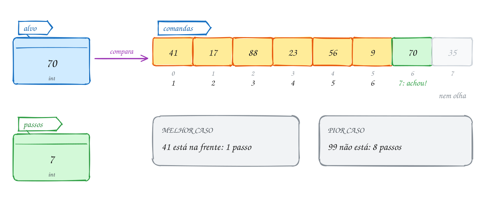
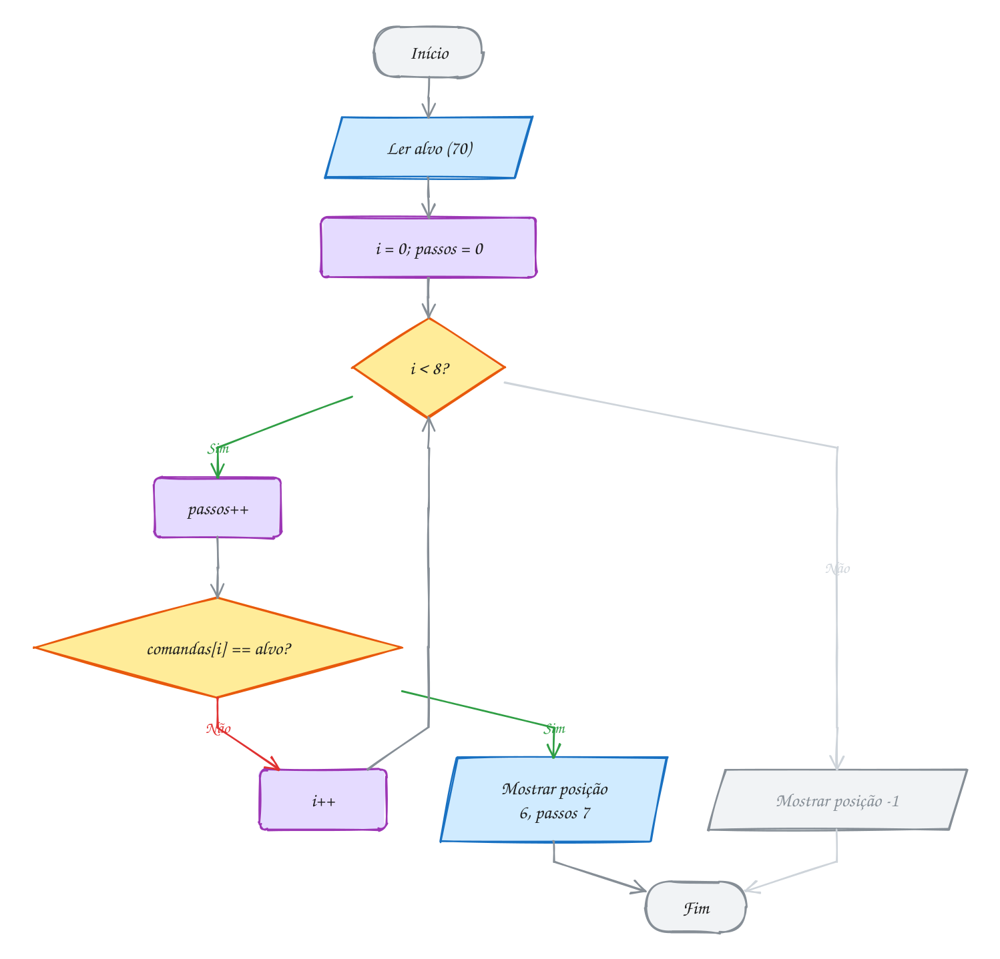
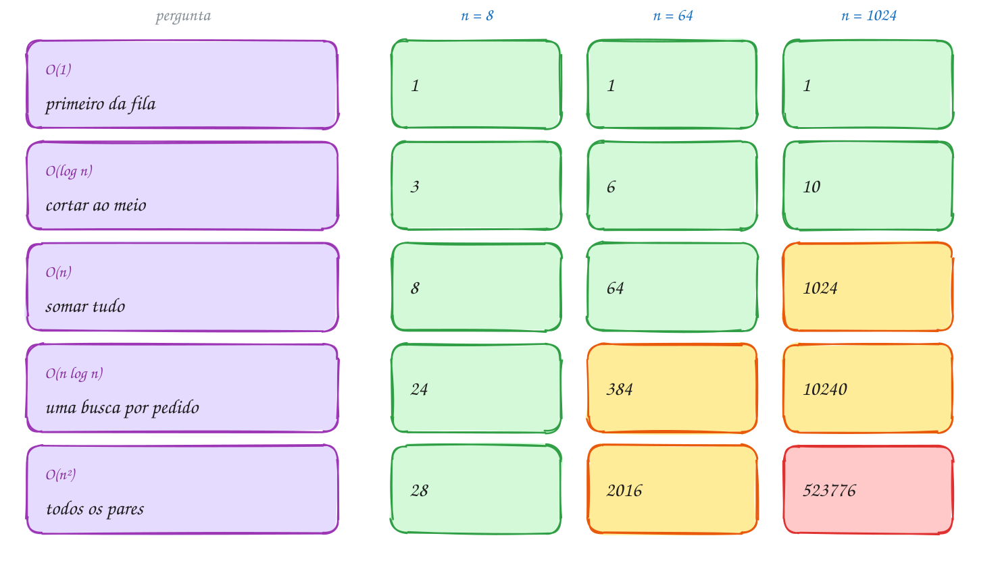
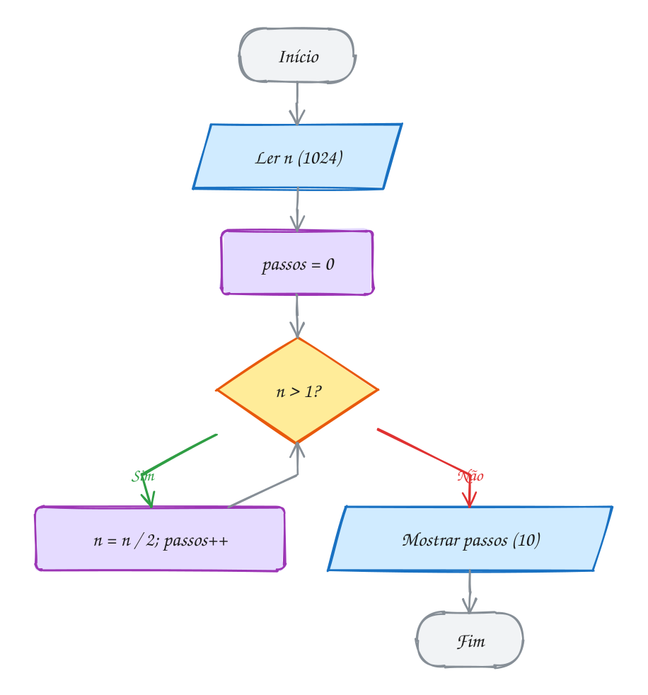
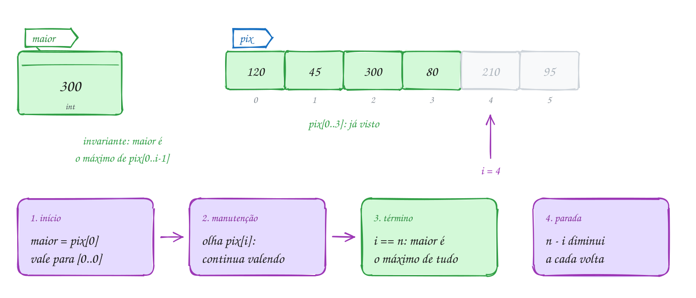
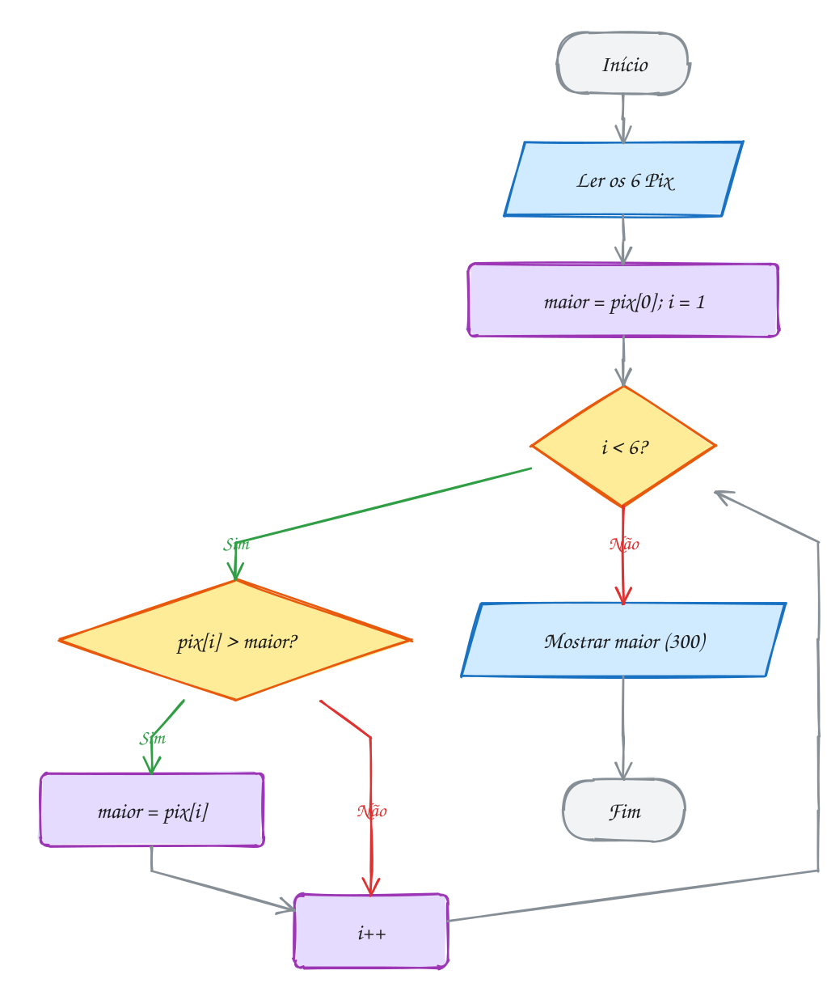
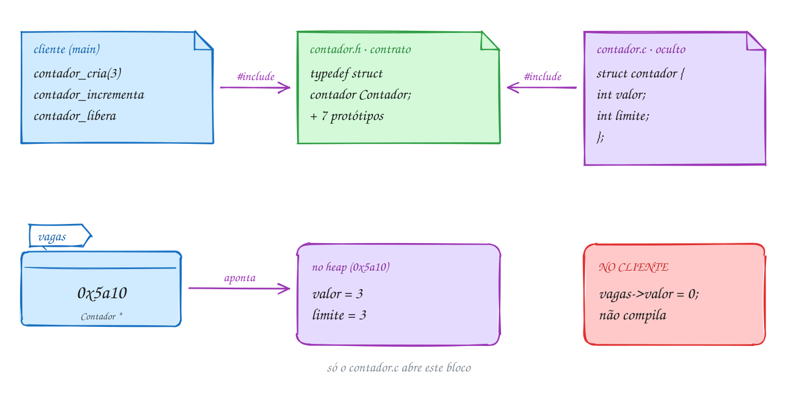
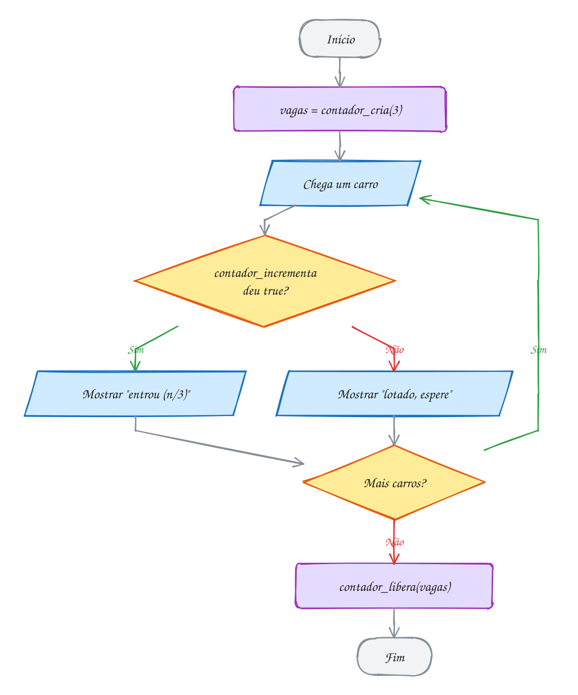

[!IMPORTANT] Mundo 3 · Custo e estruturas lineares · Rota do jogo: etapa 11 de 29
Missão: medir o custo de um algoritmo e escrever tipos abstratos de dado.
Vem de: Módulo 09 · Arquivos e linha de comando. Segue para: Módulo 26 · Notação assintótica, somatórios e espaço.
Checkpoints desta fase:
- Ler os assuntos 0071 a 0074 e refazer os exemplos
- Resolver os 4 exercícios de cada assunto, escrevendo o código sozinho
- Fechar a lista prática (P1001 a P1030)
- Enfrentar os desafios do módulo
- Chefão: resolver as questões de prova do módulo sem consultar
Três ideias que atravessam o resto do curso: medir o custo contando passos
e resumindo o crescimento na notação O, provar que está certo com
invariantes de laço e esconder os detalhes num tipo abstrato de dado.
Depende de funções, vetores, ponteiros, malloc e struct (módulos 04 a 08);
prepara os módulos 11 a 16.
.h), implementação (.c) e tipo opaco: o padrão dos próximos módulosMude o n, troque os dados e quebre um invariante de propósito para ver o
assert disparar. Nos desenhos de custo, verde é o que continua leve e
vermelho, o que explodiu. Os contadores medem passos, não segundos.
<assert.h>: assert(condicao) para o programa se a condição for falsa.contador.h, contador.c,
conta.h e conta.c. O comando do exemplo compila junto todo .c da pasta
que não se chama A000.c/E000.c:gcc ~/LPEDC/material/A147.c ~/LPEDC/material/0074-conta.c ~/LPEDC/material/0074-contador.c -o ~/LPEDC/material/A147 && ~/LPEDC/material/A147
| # | Assunto |
|---|---|
| 0071 | Eficiência: contar passos |
| 0072 | Notação O: como o custo cresce |
| 0073 | Invariantes de laço e corretude |
| 0074 | TAD: interface (.h) e implementação (.c) |
[!NOTE] Cada assunto é um capítulo: Conceito (a explicação), Exemplos de uso (programas que compilam sozinhos: rode com o comando abaixo de cada um e compare com a saída no fim do código) e Exercícios (cada um é um arquivo em
material/com o esqueleto, as dicas e o espaço para a resposta; resoluções em_respostas/10-analise/).
Até aqui a pergunta sobre um programa era "ele está certo?". A partir de agora entra outra: "ele é rápido o bastante?". Dois programas certos podem resolver o mesmo problema, um em um instante e o outro em horas. Para escolher entre eles, você precisa de um jeito de medir o custo que não dependa da sorte nem do computador.
Sexta à noite, padaria cheia. Você entrega a comanda 70 e a atendente procura no bolo de comandas, uma por uma. Se a sua for a primeira, você sai na hora; se for a última, espera o bolo inteiro. Com 8 comandas, tanto faz. Com 800, faz diferença. O que pesa aqui é quantas comandas ela olha, e não a velocidade das mãos dela.
Com programas é igual. Medir em segundos não funciona, porque o mesmo código leva 2 ms num notebook, 9 ms num Raspberry Pi e 40 ms num computador ocupado com outras tarefas. O que não muda de máquina é quantos passos o algoritmo dá. A eficiência de um algoritmo se avalia por essa contagem de passos, e não pelo relógio (FEOFILOFF, 2009).
Contar cada instrução seria trabalhoso e pouco útil. Em vez disso, escolha a
operação dominante, aquela que se repete mais e resume o trabalho, e conte
quantas vezes ela acontece em função de n, o tamanho da entrada. Numa busca
num vetor, a operação dominante é a comparação v[i] == alvo. O i++ e o
i < n acontecem junto com ela, uma vez por volta, e contá-los mudaria o
total por um fator fixo, não a ideia de custo (FEOFILOFF, 2009).
A contagem depende de qual entrada chega, e não só do tamanho. No bolo de 8 comandas, procurar a que está em cima custa 1 comparação; procurar a de baixo, ou uma que nem está lá, custa 8. Daí saem três casos (ZIVIANI, 2010, cap. 1). O melhor caso é a entrada mais favorável, e custa 1 passo. O pior caso é a mais desfavorável, e custa n passos. O caso médio é a média sobre todas as posições possíveis: se a comanda está no bolo e qualquer posição é igualmente provável, a busca faz em média (n + 1) / 2 comparações.
Escrita como fórmula de n, a contagem se chama função de custo; o Ziviani usa o nome função de complexidade. Para a busca, f(n) = n no pior caso (ZIVIANI, 2010, cap. 1). Contar passos dá a complexidade temporal, que fala de tempo. Contar quanta memória extra o algoritmo usa dá a complexidade espacial, assunto do 0168 (ZIVIANI, 2010, cap. 1).
Entre os três casos, a análise costuma olhar o pior. Só ele permite fazer uma promessa: "esta busca nunca passa de n comparações, qualquer que seja a entrada". O melhor caso é uma situação particular e não garante nada, como dizer que uma avenida nunca tem trânsito porque às 4 da manhã ela estava livre (CELES; RANGEL, 2002). A tabela mostra como os casos crescem com n:
| comandas (n) | melhor caso | caso médio | pior caso |
|---|---|---|---|
| 8 | 1 | 4,5 | 8 |
| 800 | 1 | 400,5 | 800 |
| 80.000 | 1 | 40.000,5 | 80.000 |
Multiplicou n por 100, o pior caso também multiplicou por 100. O assunto 0072 parte dessa observação.
Para estudar o custo na prática, use um contador: uma variável somada a
cada execução da operação dominante, e mostrada no fim. Medir com clock()
engana quando a entrada é pequena, porque o ruído do sistema passa do tempo
medido. E com a otimização -O2, o gcc pode apagar um laço cujo resultado
ninguém usa. O contador, impresso no printf, mantém o laço vivo e dá o
mesmo número em qualquer máquina.
[!WARNING] Contar a coisa errada engana. Com o
passos++depois doifque dáreturn, a comparação que acertou fica fora e achar na primeira posição aparece com 0 passos. Sem zerar o contador entre buscas, ele acumula. Confira o caso mais simples à mão: achar na primeira posição custa 1.
Na padaria, a moça procura sua comanda no bolo, uma por uma. A comanda 70 está na posição 6: a busca erra as 6 primeiras e acerta na 7ª comparação. A 41 sai em 1 passo; a 99, que não está no bolo, custa as 8:

O contador é uma variável global somada a cada comparação, só para estudar o custo.
#include <stdio.h>
int passos = 0; // conta as comparações: a operação que domina o custo
// Devolve o índice de alvo em v[0..n-1], ou -1 se ele não estiver lá.
int busca(const int v[], int n, int alvo) {
for (int i = 0; i < n; i++) {
passos++; // vai comparar v[i] com o alvo
if (v[i] == alvo) {
return i;
}
}
return -1;
}
int main(void) {
int comandas[8] = {41, 17, 88, 23, 56, 9, 70, 35};
int alvos[3] = {41, 70, 99};
for (int k = 0; k < 3; k++) {
passos = 0; // zera antes de cada busca
int pos = busca(comandas, 8, alvos[k]);
printf("comanda %d: posição %2d, passos: %d\n", alvos[k], pos, passos);
}
return 0;
}
// Saída:
// comanda 41: posição 0, passos: 1
// comanda 70: posição 6, passos: 7
// comanda 99: posição -1, passos: 8
O laço tem duas saídas: "achou?" responde Sim, ou as comandas acabam. Cada volta pelo losango de baixo soma um passo:

Exemplo A141 · Contar tudo: a busca com sentinela
#include <stdio.h>
// Na catraca da academia, a busca compara duas coisas a cada volta: "acabou
// a lista?" (i < n) e "é esta matrícula?". Contando as DUAS, dá para ver o
// truque da sentinela: pôr a própria matrícula procurada no fim da lista
// garante que a busca sempre acha, e o teste i < n some do laço.
int comparacoes = 0; // conta toda comparação, de qualquer tipo
int busca_comum(const int v[], int n, int alvo) {
int i = 0;
while (1) {
comparacoes++; // i < n
if (!(i < n)) {
return -1;
}
comparacoes++; // v[i] == alvo
if (v[i] == alvo) {
return i;
}
i++;
}
}
// v precisa ter uma posição livre em v[n] para a sentinela.
int busca_sentinela(int v[], int n, int alvo) {
v[n] = alvo; // a sentinela: a busca vai parar aqui, no pior caso
int i = 0;
while (1) {
comparacoes++; // v[i] == alvo (o único teste do laço)
if (v[i] == alvo) {
break;
}
i++;
}
return i < n ? i : -1; // um teste só, fora do laço
}
int main(void) {
int matriculas[9] = {3021, 1187, 4410, 2595, 3978, 1203, 4862, 2240}; // 8 + 1 livre
int alvos[3] = {3021, 4862, 9999};
printf("%8s %6s %7s %10s\n", "alvo", "pos", "comum", "sentinela");
for (int k = 0; k < 3; k++) {
comparacoes = 0;
int pos = busca_comum(matriculas, 8, alvos[k]);
int c1 = comparacoes;
comparacoes = 0;
busca_sentinela(matriculas, 8, alvos[k]);
int c2 = comparacoes + 1; // + o teste i < n do return
printf("%8d %6d %7d %10d\n", alvos[k], pos, c1, c2);
}
return 0;
}
// Saída:
// alvo pos comum sentinela
// 3021 0 2 2
// 4862 6 14 8
// 9999 -1 17 10
//
// Pior caso: 2n + 1 contra n + 2. As duas continuam crescendo junto com n,
// mas a sentinela corta quase metade das comparações.
gcc ~/LPEDC/material/A141.c -o ~/LPEDC/material/A141 && ~/LPEDC/material/A141
Exemplo A142 · Três tarefas, três ritmos
#include <stdio.h>
// O grupo do condomínio tem n moradores. Três tarefas, contadas passo a passo:
// aviso: o síndico manda UMA mensagem no grupo
// convite: o síndico manda uma mensagem para cada morador
// cumprimento: cada par de moradores troca um "bom dia"
long tarefa_aviso(int n) {
(void)n; // não importa quantos moradores existem
long passos = 0;
passos++; // uma mensagem só
return passos;
}
long tarefa_convite(int n) {
long passos = 0;
for (int i = 0; i < n; i++) {
passos++; // uma mensagem por morador
}
return passos;
}
long tarefa_cumprimento(int n) {
long passos = 0;
for (int i = 0; i < n; i++) {
for (int j = i + 1; j < n; j++) {
passos++; // o par (i, j) se cumprimenta
}
}
return passos;
}
int main(void) {
int tamanhos[3] = {10, 100, 1000};
printf("%6s %7s %9s %12s\n", "n", "aviso", "convite", "cumprimento");
for (int k = 0; k < 3; k++) {
int n = tamanhos[k];
printf("%6d %7ld %9ld %12ld\n", n, tarefa_aviso(n), tarefa_convite(n),
tarefa_cumprimento(n));
}
return 0;
}
// Saída:
// n aviso convite cumprimento
// 10 1 10 45
// 100 1 100 4950
// 1000 1 1000 499500
gcc ~/LPEDC/material/A142.c -o ~/LPEDC/material/A142 && ~/LPEDC/material/A142
Exercício E421 · ★☆☆
Escreva um programa que monta cada trecho abaixo, conta com uma variável "passos" quantas vezes o passos++ roda e mostra o resultado. Zere o contador antes de cada trecho.
a) for (i = 0; i < 6; i++) for (j = 0; j < 4; j++) passos++;
b) for (i = 0; i < 6; i++) for (j = i; j < 6; j++) passos++;
c) for (i = 1; i < 100; i = i * 2) passos++;
d) for (i = 0; i < 10; i++) if (i % 3 == 0) passos++;
No d), conte também as voltas do laço numa segunda variável, "voltas", e mostre as duas.
Saída esperada:
a) 24
b) 21
c) 7
d) 4 passos em 10 voltas
Exercício E423 · ★★☆
O texto disse que, em média, a busca sequencial custa (n + 1) / 2 comparações. Não acredite: meça. Escreva um programa que, para n = 10, 100 e 1000:
Saída esperada:
n = 10: total 55, média 5.5
n = 100: total 5050, média 50.5
n = 1000: total 500500, média 500.5
Exercício E424 · ★★☆
Dois jeitos de saber se n é primo, contando as divisões (n % d) como passo:
ingênuo: testa todo d de 2 até n - 1;
esperto: testa d de 2 enquanto d * d <= n. Se n tivesse um divisor maior
que a raiz, teria também um menor, que já teria aparecido.
Escreva as duas funções (devolvem bool) com contadores e mostre a tabela para os primos 97, 997 e 9973.
Saída esperada:
n ingênuo esperto
97 95 8
997 995 30
9973 9971 98
Exercício E426 · ★★★
No assunto 0033 você viu que o Fibonacci recursivo é lento. Agora meça o quanto. Escreva:
Mostre a tabela para n = 10, 20 e 30 (contadores long). Depois, uma segunda tabela: para n de 20 a 25, as chamadas da recursiva e a razão entre as chamadas de n e as de n - 1.
Saída esperada:
n fib chamadas somas
10 55 177 9
20 6765 21891 19
30 832040 2692537 29
n = 20: 21891 chamadas, razão 1.618
n = 21: 35421 chamadas, razão 1.618
n = 22: 57313 chamadas, razão 1.618
n = 23: 92735 chamadas, razão 1.618
n = 24: 150049 chamadas, razão 1.618
n = 25: 242785 chamadas, razão 1.618
Você fez o app da hamburgueria. Com 8 pedidos por noite, voou; com 64, tudo bem; na Black Friday, com 1024, uma tela travou. O código não mudou. Mudou o n, o número de pedidos, e cada parte do programa reagiu de um jeito. O assunto 0071 ensinou a contar passos para um n. Agora a pergunta é outra: como essa contagem cresce quando n cresce?
Pense em duas contas de luz. Uma cobra R$ 10 fixos mais R$ 1 por kWh; a outra, R$ 0 fixos mais R$ 0,01 por kWh ao quadrado. Num mês de pouco consumo, a segunda sai mais barata. Mas o que decide qual é cara de verdade é o formato da conta quando o consumo sobe, e não o valor fixo. A notação O (lê-se "ó grande") descreve esse formato: ela diz como a contagem de passos cresce quando n cresce, numa expressão curta como O(n) ou O(n²) (CORMEN et al., 2024, cap. 3).
Para chegar a essa expressão, a notação descarta de propósito duas coisas. A primeira são as constantes multiplicativas: 3n e 100n são ambos O(n). A constante depende da máquina e de detalhes do código; o formato do crescimento, não. Se n dobra, 3n e 100n dobram do mesmo jeito (CELES; RANGEL, 2002).
A segunda são os termos menores. Em n² + 50n + 7, o n² manda quando n cresce: com n = 1000, ele vale 1.000.000, o 50n vale 50.000 e o 7 quase nada. A soma fica perto de n², e a classe é O(n²) (ZIVIANI, 2010, cap. 1).
A definição formal, no nome do Cormen, diz exatamente quando isso vale: f(n) é O(g(n)) se existem uma constante c > 0 e um ponto de partida n₀ tais que 0 ≤ f(n) ≤ c · g(n) para todo n ≥ n₀ (CORMEN et al., 2024, cap. 3). Leia assim: a partir de algum tamanho, f nunca passa de um múltiplo de g. É um teto. Para n² + 50n + 7, c = 2 e n₀ = 51 funcionam, porque a partir daí 50n + 7 fica abaixo de n². Os valores pequenos de n, antes de n₀, não contam.
O O tem dois parentes. Ω (ômega) é o piso: f(n) ≥ c · g(n) a partir de n₀, ou seja, f cresce pelo menos tanto quanto g. Θ (teta) é teto e piso juntos, o crescimento exato: n² + 50n + 7 é Θ(n²). O assunto 0166 trata os três com cuidado (CORMEN et al., 2024, cap. 3).
Para ler a classe de um código, olhe os laços (FEOFILOFF, 2009). Um laço que anda de 1 em 1 até n é O(n). Dois laços aninhados, cada um até n, dão n vezes n passos, O(n²). Um laço que divide n por 2 a cada volta é O(log n): de 1024 até 1 são só 10 cortes, porque 2¹⁰ = 1024. A base do logaritmo não importa, porque trocar log₂ por log₁₀ só multiplica por uma constante, e a notação já descarta constantes.
A estrutura de dados também decide a classe. v[i] num vetor é O(1), porque
o vetor ocupa memória contínua e o endereço sai de uma conta só:
endereço de v + i * sizeof(int). Numa lista encadeada, que aparece no
módulo 11, não existe essa conta: chegar ao elemento i exige seguir i
ponteiros, um depois do outro, e custa O(n) (CELES; CERQUEIRA; RANGEL, 2016).
As cinco classes que você vai encontrar no curso, da melhor para a pior. A terceira coluna é o teste mais prático: o que acontece com o custo quando o n dobra.
| classe | nome | n dobra, o custo... | exemplo |
|---|---|---|---|
| O(1) | constante | fica igual | v[i], topo da pilha |
| O(log n) | logarítmica | ganha 1 passo | busca binária |
| O(n) | linear | dobra | somar um vetor |
| O(n log n) | "n log n" | pouco mais que dobra | merge sort |
| O(n²) | quadrática | quadruplica | comparar todos os pares |
[!WARNING] O(n) não é "sempre mais rápido" que O(n²): a notação fala do crescimento, não do tempo para um n específico. Um algoritmo de 100n passos perde de um de n² até n = 100. E um laço O(n) que chama a cada volta uma função O(n) dá O(n²), como o
strlen(s)na condição dofor.
O app da hamburgueria faz cinco perguntas sobre os mesmos pedidos, com 8, 64 e 1024 pedidos. Em verde, o que continua leve em 1024; em vermelho, o que explodiu:

#include <stdio.h>
// O(1): qual é o primeiro pedido da fila? Basta olhar a posição 0.
long passos_constante(int n) {
(void)n;
return 1;
}
// O(log n): cortar a lista ordenada ao meio até sobrar 1 pedido.
long passos_log(int n) {
long passos = 0;
while (n > 1) {
n = n / 2;
passos++;
}
return passos;
}
// O(n): somar o faturamento, olhando cada pedido uma vez.
long passos_linear(int n) {
long passos = 0;
for (int i = 0; i < n; i++) {
passos++;
}
return passos;
}
// O(n log n): para cada pedido de hoje, uma busca binária na lista de ontem.
long passos_n_log_n(int n) {
long passos = 0;
for (int i = 0; i < n; i++) {
passos += passos_log(n);
}
return passos;
}
// O(n²): comparar cada pedido com todos os outros, atrás de duplicados.
long passos_quadratico(int n) {
long passos = 0;
for (int i = 0; i < n; i++) {
for (int j = i + 1; j < n; j++) {
passos++;
}
}
return passos;
}
int main(void) {
int tamanhos[3] = {8, 64, 1024};
printf("%6s %5s %6s %6s %8s %8s\n", "n", "O(1)", "log n", "n", "n log n", "n^2");
for (int k = 0; k < 3; k++) {
int n = tamanhos[k];
printf("%6d %5ld %6ld %6ld %8ld %8ld\n", n, passos_constante(n), passos_log(n),
passos_linear(n), passos_n_log_n(n), passos_quadratico(n));
}
return 0;
}
// Saída:
// n O(1) log n n n log n n^2
// 8 1 3 8 24 28
// 64 1 6 64 384 2016
// 1024 1 10 1024 10240 523776
Comparar todos os pares dá n(n − 1)/2, cerca de n²/2: continua O(n²). De 64 para 1024, n cresceu 16 vezes, a última coluna 260 vezes e a do log ganhou 4 passos. O fluxograma mostra o laço do O(log n) com n = 1024: "n > 1?" responde Sim só 10 vezes:

Exemplo A143 · A base do log não importa
#include <stdio.h>
// Dois jeitos de "encolher" n até sobrar 1:
// torneio mata-mata: metade dos times cai a cada rodada -> divide por 2
// apagar dígitos: o número perde um dígito por vez -> divide por 10
// Os dois são O(log n). A conta de baixo mostra por quê: a razão entre eles
// não cresce com n, fica perto de uma constante (log₂ 10 ≈ 3,32).
int cortes(long long n, int divisor) {
int passos = 0;
while (n > 1) {
n = n / divisor;
passos++;
}
return passos;
}
int main(void) {
long long tamanhos[4] = {1000, 1000000, 1000000000, 1000000000000};
printf("%14s %8s %9s %7s\n", "n", "por 2", "por 10", "razão");
for (int k = 0; k < 4; k++) {
long long n = tamanhos[k];
int c2 = cortes(n, 2);
int c10 = cortes(n, 10);
printf("%14lld %8d %9d %7.2f\n", n, c2, c10, (double)c2 / c10);
}
return 0;
}
// Saída:
// n por 2 por 10 razão
// 1000 9 3 3.00
// 1000000 19 6 3.17
// 1000000000 29 9 3.22
// 1000000000000 39 12 3.25
//
// n cresceu um bilhão de vezes e as duas colunas só ganharam uns poucos
// passos. A razão se aproxima de 3,32: trocar a base só multiplica por uma
// constante, e a notação O ignora constantes. Por isso se escreve só O(log n).
gcc ~/LPEDC/material/A143.c -o ~/LPEDC/material/A143 && ~/LPEDC/material/A143
Exemplo A144 · A constante grande perde no fim
#include <stdio.h>
// Duas bibliotecas de cálculo de frete para n pedidos:
// A: faz 100 contas fixas por pedido -> 100n passos, O(n)
// B: compara cada pedido com cada pedido -> n² passos, O(n²)
// Para n pequeno, B ganha. Depois de um ponto, A ganha para sempre.
long biblioteca_a(int n) {
long passos = 0;
for (int i = 0; i < n; i++) {
for (int k = 0; k < 100; k++) {
passos++;
}
}
return passos;
}
long biblioteca_b(int n) {
long passos = 0;
for (int i = 0; i < n; i++) {
for (int j = 0; j < n; j++) {
passos++;
}
}
return passos;
}
int main(void) {
int tamanhos[5] = {10, 50, 100, 200, 1000};
printf("%5s %8s %8s %s\n", "n", "A: 100n", "B: n^2", "mais rápida");
for (int k = 0; k < 5; k++) {
int n = tamanhos[k];
long a = biblioteca_a(n);
long b = biblioteca_b(n);
const char *vence = a < b ? "A" : (b < a ? "B" : "empate");
printf("%5d %8ld %8ld %s\n", n, a, b, vence);
}
return 0;
}
// Saída:
// n A: 100n B: n^2 mais rápida
// 10 1000 100 B
// 50 5000 2500 B
// 100 10000 10000 empate
// 200 20000 40000 A
// 1000 100000 1000000 A
gcc ~/LPEDC/material/A144.c -o ~/LPEDC/material/A144 && ~/LPEDC/material/A144
Exercício E427 · ★☆☆
Transforme cada trecho abaixo numa função long trecho_a(int n), ..., trecho_f(int n), que roda o trecho e devolve quantas vezes o x++ (ou a conta do d) aconteceu. No main, mostre uma tabela com a contagem para n = 16 e n = 1024. No rótulo de cada linha, escreva a classe O que a contagem indica.
a) for (i = 0; i < n; i++) for (j = 0; j < 10; j++) x++;
b) for (i = 1; i < n; i = i * 2) x++;
c) for (i = 0; i < n; i++) for (j = 0; j < i; j++) x++;
d) x = v[n / 2] + v[0];
e) for (i = 0; i < n; i++) x++;
for (j = 0; j < n; j++) x++;
f) for (i = 0; i < n; i++) for (j = n; j > 1; j = j / 2) x++;
Saída esperada:
trecho n=16 n=1024
a) O(n) 160 10240
b) O(log n) 4 10
c) O(n^2) 120 523776
d) O(1) 1 1
e) O(n) 32 2048
f) O(n log n) 64 10240
Exercício E429 · ★★☆
O cupom fiscal tem códigos de produto de 0 a 999. Você quer saber se algum código aparece repetido. Escreva duas funções que devolvem bool e contam passos (comparações ou consultas):
Teste com n = 100 e n = 1000, com v[i] = (i * 37) % 1000 (que não tem repetidos: é o pior caso, as duas vão até o fim).
Saída esperada:
n = 100: pares 4950 passos, marcas 100 passos
n = 1000: pares 499500 passos, marcas 1000 passos
Exercício E430 · ★★☆
A "regra do dobro": rode um algoritmo com n e com 2n e divida os passos. Razão perto de 1 (com +1 passo) é O(log n); perto de 2, O(n); perto de 4, O(n²). Escreva quatro funções long misterio_a(int n) ... misterio_d(int n), que devolvem quantas vezes o laço roda:
a) for (i = 0; i < n; i += 3)
b) for (i = n; i > 0; i /= 2)
c) for (i = 0; i < n; i++) for (j = 0; j < n; j += 2)
d) for (d = 0; d * d < n; d++)
Escreva também const char *classe(double razao): "O(log n)" se a razão for menor que 1.2, "O(raiz n)" se for menor que 1.7, "O(n)" se for menor que 3 e "O(n^2)" nos outros casos. Mostre, para n = 1000 e n = 2000, os passos, a razão e a classe de cada função.
Saída esperada:
a: 334 -> 667 razão 2.00 O(n)
b: 10 -> 11 razão 1.10 O(log n)
c: 500000 -> 2000000 razão 4.00 O(n^2)
d: 32 -> 45 razão 1.41 O(raiz n)
Exercício E431 · ★★★
Você precisa ordenar a lista de entregas e tem duas opções:
A: um algoritmo simples, que gasta 2n² passos;
B: um sofisticado, que gasta 50 n log₂ n passos.
B é O(n log n) e A é O(n²), então B ganha "no fim". Mas a partir de que n? Escreva um programa que encontra o MENOR n (começando em 2) em que B gasta menos passos que A, e mostra os dois custos nesse n. Mostre também uma tabela para n = 10, 100, 1000 e 10000.
Saída esperada:
B passa a ganhar em n = 190 (A: 72200, B: 71914)
n A B
10 200 1661
100 20000 33219
1000 2000000 498289
10000 200000000 6643856
gcc ~/LPEDC/material/E431.c -o ~/LPEDC/material/E431 -lm && ~/LPEDC/material/E431
Você escreveu um laço que acha o maior Pix do dia e testou com três vetores. Funcionou nos três. Isso prova que ele acerta naqueles três vetores, e mais nada. Para ter certeza de que acerta com qualquer entrada, inclusive as que você não pensou em testar, é preciso um argumento, e não mais testes.
Pense no caixa da lanchonete. No fim do expediente, troco inicial mais vendas tem de bater com o dinheiro da gaveta. Essa conta não vale só no fim: depois de cada cliente, "gaveta = troco + vendas até agora" continua verdadeira. Se em algum momento não bater, você sabe que o erro foi naquele cliente. Um laço bem escrito tem uma frase desse tipo. O invariante de laço é uma relação entre as variáveis que vale no começo de cada iteração, logo antes do teste do laço. Ele serve para explicar o que o laço faz e para provar que o laço está certo (FEOFILOFF, 2009).
Para escrever invariantes sobre vetores, use a notação v[0..i-1]: os
elementos de índice 0 até i − 1. Quando i vale 0, o trecho é vazio. Com ela,
o invariante de "achar o maior" fica: maior é um máximo de
v[0..i-1] (FEOFILOFF, 2009). A frase diz o que o laço já sabe sobre a
parte que viu, e não como ele anda. No começo da volta com i = 4, os quatro
primeiros Pix já foram vistos, e maior guarda o maior deles.
Mostrar que um laço está certo com o invariante tem quatro passos, no mesmo espírito de uma prova por indução, que vale para o primeiro caso e passa de um caso ao seguinte (CORMEN et al., 2024, cap. 2):
No laço do maior, com maior = v[0] e i = 1, o início vale: um elemento
sozinho é o máximo dele mesmo. Na manutenção, se maior é o máximo de
v[0..i-1], a volta compara com v[i] e fica com o maior dos dois; agora
maior é o máximo de v[0..i], e o i++ devolve a frase à forma original.
No término, o teste i < n falha com i == n, e o invariante passa a dizer
"maior é um máximo de v[0..n-1]", o vetor inteiro: é a resposta.
Os três primeiros passos mostram que, se o laço acabar, a resposta está certa. O quarto mostra que ele acaba. A variante é uma quantidade inteira que diminui a cada volta e não pode diminuir para sempre. No laço do maior, é n − i: começa em n − 1, perde 1 por volta e chega a 0, e aí o laço para.
O mesmo raciocínio melhora a documentação. O comentário de uma função é um
contrato: diz o que ela faz, e não como. "Recebe n ≥ 1 e v; devolve o
valor de um elemento máximo de v[0..n-1]" cobre todos os parâmetros,
diz a restrição (n ≥ 1, porque com o vetor vazio não há máximo) e usa "um"
porque pode haver empate (FEOFILOFF, 2009). Quem chama a função lê só isso e
sabe o que esperar.
Para conferir um invariante enquanto o programa roda, use o assert(cond),
de <assert.h>. Se cond for falsa, ele mostra o arquivo, a linha e a
condição, e encerra o programa na hora. Compilado com -DNDEBUG, o assert
vira nada, e nem a condição é calculada (CPPREFERENCE, s.d.). Por isso você
pode pôr dentro dele uma conferência lenta, só para teste, que não custa
nada na versão final.
[!WARNING] O erro clássico é o início:
int maior = 0;passa nos testes com valores positivos, mas com −120, −45, −300 devolve 0, que nem está no vetor. Comece commaior = v[0]e i = 1. E nunca ponha dentro doassertalgo que o programa precisa fazer, comoassert(fp = fopen(...)): com-DNDEBUG, some.
Os Pix do dia foram 120, 45, 300, 80, 210 e 95. No começo da volta com i = 4, a
parte verde já foi vista e maior (300) é o maior dela:

O assert transforma o invariante em código. A eh_maximo é lenta de
propósito: confere o invariante pelo caminho ingênuo, só para testar.
#include <assert.h>
#include <stdbool.h>
#include <stdio.h>
// Devolve true se x é um máximo de v[0..i-1]: x está lá e ninguém passa dele.
bool eh_maximo(const int v[], int i, int x) {
bool esta = false;
for (int k = 0; k < i; k++) {
if (v[k] > x) {
return false;
}
if (v[k] == x) {
esta = true;
}
}
return esta;
}
// Recebe n >= 1 e v; devolve o valor de um elemento máximo de v[0..n-1].
int maximo(const int v[], int n) {
int maior = v[0];
int i = 1;
while (i < n) {
// invariante: maior é um máximo de v[0..i-1]
assert(eh_maximo(v, i, maior));
printf("i = %d: maior = %d\n", i, maior);
if (v[i] > maior) {
maior = v[i];
}
i++;
}
// na saída, i == n: o invariante diz que maior é um máximo de v[0..n-1]
assert(eh_maximo(v, n, maior));
return maior;
}
int main(void) {
int pix[6] = {120, 45, 300, 80, 210, 95};
printf("Maior Pix: R$ %d\n", maximo(pix, 6));
return 0;
}
// Saída:
// i = 1: maior = 120
// i = 2: maior = 120
// i = 3: maior = 300
// i = 4: maior = 300
// i = 5: maior = 300
// Maior Pix: R$ 300
Os quatro passos neste laço, com o teste de mesa:
| começo da volta | i | v[0..i-1] |
maior | invariante vale? |
|---|---|---|---|---|
| 1ª | 1 | 120 | 120 | sim: um elemento só é o máximo dele mesmo (início) |
| 2ª | 2 | 120, 45 | 120 | sim: 45 não passou de 120 |
| 3ª | 3 | 120, 45, 300 | 300 | sim: 300 passou e virou o maior |
| 4ª | 4 | ..., 80 | 300 | sim |
| 5ª | 5 | ..., 210 | 300 | sim |
| teste falha | 6 | o vetor todo | 300 | sim, e i == n: é a resposta (término) |
Manutenção: se maior é o máximo de v[0..i-1], a volta compara com
v[i] e fica com o maior dos dois: maior passa a ser o máximo de v[0..i],
e o i++ devolve a forma "máximo de v[0..i-1]". Parada: n − i diminui 1
por volta e o laço acaba em 0.
No fluxograma, o invariante fica na seta que volta ao losango "i < 6?". Toda vez que o caminho passa ali, a frase é verdadeira:

Exemplo A145 · Dois invariantes no mesmo extrato
#include <assert.h>
#include <stdio.h>
// O extrato do mês: saldo inicial e os movimentos (+ entrada, - saída).
// O laço mantém DUAS frases verdadeiras ao mesmo tempo, no começo de cada
// volta:
// saldo == inicial + soma de mov[0..i-1]
// minimo == o menor saldo visto até agora (o inicial e os saldos depois
// de cada movimento de mov[0..i-1])
// As funções abaixo recalculam tudo do zero, só para conferir.
int soma_ate(const int v[], int i) {
int s = 0;
for (int k = 0; k < i; k++) {
s += v[k];
}
return s;
}
int menor_saldo_ate(int inicial, const int v[], int i) {
int saldo = inicial, menor = inicial;
for (int k = 0; k < i; k++) {
saldo += v[k];
if (saldo < menor) {
menor = saldo;
}
}
return menor;
}
int main(void) {
int inicial = 200;
int mov[5] = {150, -320, -80, 500, -60};
int n = 5;
int saldo = inicial;
int minimo = inicial; // i = 0: só o saldo inicial foi visto
for (int i = 0; i < n; i++) {
assert(saldo == inicial + soma_ate(mov, i));
assert(minimo == menor_saldo_ate(inicial, mov, i));
printf("antes do movimento %d: saldo %4d, mínimo %4d\n", i, saldo, minimo);
saldo += mov[i];
if (saldo < minimo) {
minimo = saldo;
}
}
// término: i == n, as duas frases falam do extrato inteiro
assert(saldo == inicial + soma_ate(mov, n));
assert(minimo == menor_saldo_ate(inicial, mov, n));
printf("Saldo final: R$ %d\n", saldo);
printf("Pior momento do mês: R$ %d\n", minimo);
return 0;
}
// Saída:
// antes do movimento 0: saldo 200, mínimo 200
// antes do movimento 1: saldo 350, mínimo 200
// antes do movimento 2: saldo 30, mínimo 30
// antes do movimento 3: saldo -50, mínimo -50
// antes do movimento 4: saldo 450, mínimo -50
// Saldo final: R$ 390
// Pior momento do mês: R$ -50
//
// Repare no início: com i = 0 o pedaço mov[0..-1] está vazio, então o saldo
// é o inicial e o mínimo também. Começar com minimo = 0 quebraria a segunda
// frase logo antes da primeira volta.
gcc ~/LPEDC/material/A145.c -o ~/LPEDC/material/A145 && ~/LPEDC/material/A145
Exemplo A146 · Fichas e troco: o invariante da divisão
#include <assert.h>
#include <stdio.h>
// Com R$ 47, quantas fichas de R$ 5 dá para comprar, e quanto sobra?
// É a divisão inteira 47 / 5, feita só com subtrações.
//
// Invariante (vale no começo de cada volta): valor == q * ficha + r e r >= 0
// Variante (garante que o laço termina): r diminui a cada volta.
int main(void) {
int valor = 47, ficha = 5;
int q = 0; // fichas compradas
int r = valor; // dinheiro que sobrou
while (r >= ficha) {
assert(valor == q * ficha + r && r >= 0);
r = r - ficha;
q = q + 1;
}
// invariante + saída do laço (r < ficha): q é o quociente e r o resto
assert(valor == q * ficha + r && r >= 0 && r < ficha);
printf("%d = %d * %d + %d\n", valor, q, ficha, r);
printf("Fichas: %d, troco: R$ %d\n", q, r);
printf("Confere com / e %%: %d e %d\n", valor / ficha, valor % ficha);
return 0;
}
// Saída:
// 47 = 9 * 5 + 2
// Fichas: 9, troco: R$ 2
// Confere com / e %: 9 e 2
gcc ~/LPEDC/material/A146.c -o ~/LPEDC/material/A146 && ~/LPEDC/material/A146
Exercício E433 · ★☆☆
Escreva um programa com os quatro laços abaixo. Em cada um, ponha um assert com o invariante logo no começo do corpo e outro depois do laço (o término). Escreva também as funções que conferem os invariantes: soma_ate(v, i), aprovados_ate(v, i) (quantos de v[0..i-1] são >= 6), potencia_de_2(k) e nao_esta(v, ini, fim, x) (x não aparece em v[ini..fim-1]).
a) gastos = {20, 35, 15, 50}; s = 0; for (i = 0; i < n; i++) s = s + gastos[i];
b) notas = {7, 4, 9, 6, 5}; c = 0; for (i = 0; i < n; i++) if (notas[i] >= 6) c++;
c) e = 10; p = 1; for (k = 0; k < e; k++) p = p * 2;
d) v = {3, 8, 5, 8, 1}, x = 8; k = n - 1; while (k >= 0 && v[k] != x) k--;
Saída esperada:
a) gastos: R$ 120
b) aprovados: 3
c) 2 elevado a 10: 1024
d) último 8 na posição 3
Exercício E435 · ★★☆
Escreva int ultima(const int v[], int n, int x), que procura a ÚLTIMA vez que um aluno tirou a nota x, andando do fim para o começo (começa em k = n - 1 e anda enquanto k >= 0 e v[k] != x). Devolve a posição, ou -1 se a nota não aparece. Transforme a prova de que ela está certa em código:
em v[ini..fim-1] (pedaço vazio: true);
o invariante ainda vale.
Teste com notas = {7, 9, 4, 9, 6}, e também com um vetor vazio (n = 0).
Saída esperada:
última nota 9: posição 3
última nota 5: posição -1
última nota 7: posição 0
vetor vazio: posição -1
Exercício E436 · ★★☆
O banco quer saber qual cliente está "menos no vermelho": o maior saldo entre contas todas negativas. Escreva int maximo(const int v[], int n), que devolve o maior elemento de v. Ela exige n >= 1 (escreva isso num comentário de contrato em cima) e começa com maior = v[0], sem tratar "todos negativos" como caso especial. Escreva também bool eh_maximo(v, i, x) (x está em v[0..i-1] e ninguém passa dele) e confira o invariante com assert no começo de cada volta e o término depois do laço. Teste com saldos = {-120, -45, -300, -80}, com um saldo só (-7) e com positivos (10, 3, 25).
Saída esperada:
Maior saldo: R$ -45
Um saldo só: R$ -7
Positivos: R$ 25
Exercício E437 · ★★★
Escreva int lg(int n), que devolve o piso de log₂ n (o maior i com 2 elevado a i <= n), para n >= 1, SEM math.h: divida n por 2 até chegar a 1, contando as divisões.
Confira o invariante com assert no começo de cada volta e o término com outro assert depois do laço. Depois teste: mostre lg de 1, 10, 1000, 1024 e 100000, e compare lg(n) com floor(log2(n)) de math.h para todo n de 1 a 100000, contando as divergências.
Saída esperada:
lg(1) = 0
lg(10) = 3
lg(1000) = 9
lg(1024) = 10
lg(100000) = 16
divergências de 1 a 100000: 0
gcc ~/LPEDC/material/E437.c -o ~/LPEDC/material/E437 -lm && ~/LPEDC/material/E437
Os módulos seguintes constroem listas, pilhas, filas, árvores. Cada uma tem
dados guardados de um jeito e funções que mexem neles. Se o main puder
mexer direto nos campos, qualquer descuido estraga a estrutura, e qualquer
mudança no jeito de guardar obriga a reescrever todo programa que a usa. Falta
uma parede entre quem usa a estrutura e quem a constrói.
Na entrada do estacionamento do shopping há um painel: "VAGAS LIVRES: 3". A cancela só abre se houver vaga. Você não sabe se o sistema usa sensor, câmera ou planilha, e nem precisa saber. Você usa três "botões": entrar, sair e ver quantas vagas sobram. Um tipo abstrato de dado (TAD) leva essa ideia ao código. É um tipo definido pelas operações que oferece, e não pelo modo como guarda os dados. Quem usa o tipo, o cliente, conhece só as operações; quem implementa pode trocar tudo por dentro, desde que as operações cumpram o prometido (CELES; RANGEL, 2002).
No C, essa divisão é física e fica em dois arquivos (CELES; RANGEL, 2002). O
primeiro é a interface, contador.h: o contrato. Ele declara o tipo e os
protótipos das funções, cada um com um comentário dizendo o que entra, o que
sai e o que pode dar errado. O cliente inclui esse arquivo e não vê mais
nada:
typedef struct contador Contador; // tipo opaco: os campos ficam no contador.c
// Soma 1. Devolve true se somou; false se já estava no limite.
bool contador_incrementa(Contador *c);
O segundo é a implementação, contador.c. Ele define a struct com os
campos e escreve o corpo das funções. Ele também inclui o próprio .h, para o
compilador conferir que cada função bate com o protótipo prometido. O cliente
nunca inclui o .c; ele só é compilado junto (CELES; RANGEL, 2002).
Repare na primeira linha do trecho acima. O .h diz que existe uma
struct contador, mas não diz quais campos ela tem. Para o cliente, ela é
um tipo incompleto: dá para ter um ponteiro Contador *, mas não uma
variável Contador, nem sizeof(Contador), nem vagas->valor, porque o
compilador não sabe o tamanho nem os campos. Esse é o tipo opaco, e é ele
que fecha a porta. Como o cliente não consegue criar a struct, todo TAD opaco
oferece uma contador_cria, que faz o malloc lá dentro e devolve o
ponteiro, e uma contador_libera, que faz o free (CELES; CERQUEIRA;
RANGEL, 2016).
A porta fechada é o que permite ao TAD cumprir um invariante, como no
assunto 0073. O contador promete 0 <= valor <= limite o tempo todo. A
promessa só vale porque ninguém de fora escreve vagas->valor = 99: toda
mudança passa por contador_incrementa e contador_decrementa, que recusam a
operação em vez de quebrar a regra.
O #include só cola o texto do .h no começo do arquivo do cliente. O
cliente vira um .o sem saber o tamanho da struct, e não precisa: ponteiro
tem sempre o mesmo tamanho. Só o contador.o conhece os campos, e o
ligador (linker) junta os dois .o no executável. Por isso mudar a
struct exige recompilar só o contador.c (KERNIGHAN; RITCHIE, 1989,
seção 4.5). Essa é a compilação separada.
Toda estrutura dos módulos 11 a 16 segue o mesmo molde. Para um TAD x:
x.h, x.c e os exemplos A###.c. O comando do
exemplo compila junto todo .c da pasta que não se chama
A000.c/E000.c. À mão: gcc A147.c contador.c -o a147.x.h: include guard (#ifndef X_H), que impede o arquivo de ser
colado duas vezes, typedef struct x X; e protótipos com prefixo x_,
cada um com seu contrato.x.c: inclui o próprio "x.h" e define a struct x com o invariante
comentado; funções auxiliares internas são static, invisíveis fora dele.x_cria (devolve NULL se faltar memória), x_libera (aceita
NULL) e verbos no presente: x_insere, x_remove. Leitura recebe
const X *.bool, com o valor por
ponteiro (bool pilha_desempilha(Pilha *p, int *valor)). O TAD não
imprime erro; o cliente decide o que mostrar.#include "x.h" com aspas, guarda só X *, confere o NULL
do _cria e chama _libera no fim.[!WARNING]
vagas->valor = 0;ouContador c;no cliente dá erro de compilação (invalid use of incomplete typedef): é o tipo opaco funcionando. Não mova astructpara o.h; se falta uma operação, acrescente uma função. E esquecer ocontador.cao compilar à mão dáundefined reference, erro do ligador.
O estacionamento do shopping tem 3 vagas e o painel só abre a cancela se houver
vaga. O cliente (o arquivo do main) tem só um ponteiro para um bloco no heap
que não consegue abrir:

O contrato completo está em contador.h, na pasta do assunto. O cliente
estaciona 4 carros em 3 vagas:
#include <stdio.h>
#include "contador.h" // só a interface: a struct está escondida em contador.c
int main(void) {
Contador *vagas = contador_cria(3); // estacionamento com 3 vagas
if (vagas == NULL) {
printf("Sem memória\n");
return 1;
}
const char *placas[4] = {"RIO2A18", "SPX3B45", "BHZ7C09", "CWB1D77"};
for (int i = 0; i < 4; i++) {
if (contador_incrementa(vagas)) {
printf("%s entrou (%d/%d)\n", placas[i], contador_valor(vagas),
contador_limite(vagas));
} else {
printf("%s: lotado, espere\n", placas[i]);
}
}
contador_decrementa(vagas); // um carro sai
printf("Um carro saiu (%d/%d)\n", contador_valor(vagas), contador_limite(vagas));
if (contador_incrementa(vagas)) {
printf("CWB1D77 entrou (%d/%d)\n", contador_valor(vagas), contador_limite(vagas));
}
contador_libera(vagas);
return 0;
}
// Saída:
// RIO2A18 entrou (1/3)
// SPX3B45 entrou (2/3)
// BHZ7C09 entrou (3/3)
// CWB1D77: lotado, espere
// Um carro saiu (2/3)
// CWB1D77 entrou (3/3)
O mesmo cliente outra vez, para ler lado a lado com a implementação que vem a seguir:
#include <stdio.h>
#include "contador.h" // só a interface: a struct está escondida em contador.c
int main(void) {
Contador *vagas = contador_cria(3); // estacionamento com 3 vagas
if (vagas == NULL) {
printf("Sem memória\n");
return 1;
}
const char *placas[4] = {"RIO2A18", "SPX3B45", "BHZ7C09", "CWB1D77"};
for (int i = 0; i < 4; i++) {
if (contador_incrementa(vagas)) {
printf("%s entrou (%d/%d)\n", placas[i], contador_valor(vagas),
contador_limite(vagas));
} else {
printf("%s: lotado, espere\n", placas[i]);
}
}
contador_decrementa(vagas); // um carro sai
printf("Um carro saiu (%d/%d)\n", contador_valor(vagas), contador_limite(vagas));
if (contador_incrementa(vagas)) {
printf("CWB1D77 entrou (%d/%d)\n", contador_valor(vagas), contador_limite(vagas));
}
contador_libera(vagas);
return 0;
}
// Saída:
// RIO2A18 entrou (1/3)
// SPX3B45 entrou (2/3)
// BHZ7C09 entrou (3/3)
// CWB1D77: lotado, espere
// Um carro saiu (2/3)
// CWB1D77 entrou (3/3)
O lado escondido fica em contador.c:
#include <stdlib.h>
#include "contador.h"
// Invariante da struct: 0 <= valor <= limite e limite >= 1.
struct contador {
int valor;
int limite;
};
Contador *contador_cria(int limite) {
if (limite < 1) {
return NULL;
}
Contador *c = malloc(sizeof *c);
if (c == NULL) {
return NULL;
}
c->valor = 0;
c->limite = limite;
return c;
}
bool contador_incrementa(Contador *c) {
if (c->valor == c->limite) {
return false; // recusa em vez de quebrar o invariante
}
c->valor++;
return true;
}
// ... contador_libera, contador_decrementa, contador_zera,
// contador_valor e contador_limite seguem o mesmo estilo
O cliente fala com o TAD só pelas funções. Quem decide "lotado" é o
contador_incrementa, que devolve false:

Exemplo A147 · Duas salas, dois contadores
#include <stdio.h>
#include "0074-contador.h" // só a interface: a struct está escondida em contador.c
// Na academia, a sala de spinning e a piscina têm lotações diferentes. Cada
// contador_cria devolve um objeto separado no heap: mexer num não muda o
// outro. E o TAD recusa o que quebraria a promessa 0 <= valor <= limite.
int main(void) {
Contador *invalido = contador_cria(0); // limite 0: o contrato pede >= 1
printf("Sala com 0 lugares: %s\n", invalido == NULL ? "recusada (NULL)" : "criada");
Contador *spinning = contador_cria(3);
Contador *piscina = contador_cria(2);
if (spinning == NULL || piscina == NULL) {
printf("Sem memória\n");
contador_libera(spinning); // aceita NULL
contador_libera(piscina);
return 1;
}
// 4 alunos para o spinning, 1 para a piscina
for (int i = 0; i < 4; i++) {
contador_incrementa(spinning);
}
contador_incrementa(piscina);
printf("Spinning %d/%d | Piscina %d/%d\n", contador_valor(spinning),
contador_limite(spinning), contador_valor(piscina), contador_limite(piscina));
// fim da aula: todo mundo sai do spinning, e um a mais tenta sair
int saidas = 0;
while (contador_decrementa(spinning)) {
saidas++;
}
printf("Saíram %d do spinning; sair da sala vazia: %s\n", saidas,
contador_decrementa(spinning) ? "ok" : "negado");
printf("Spinning %d/%d | Piscina %d/%d\n", contador_valor(spinning),
contador_limite(spinning), contador_valor(piscina), contador_limite(piscina));
contador_libera(spinning);
contador_libera(piscina);
return 0;
}
// Saída:
// Sala com 0 lugares: recusada (NULL)
// Spinning 3/3 | Piscina 1/2
// Saíram 3 do spinning; sair da sala vazia: negado
// Spinning 0/3 | Piscina 1/2
//
// Compilando à mão, sem o rodar: gcc A147.c contador.c -o a147
gcc ~/LPEDC/material/A147.c ~/LPEDC/material/0074-conta.c ~/LPEDC/material/0074-contador.c -o ~/LPEDC/material/A147 && ~/LPEDC/material/A147
Exemplo A148 · A conta que nunca fica negativa
#include <stdbool.h>
#include <stdio.h>
#include "0074-conta.h"
// Mostra o resultado de uma operação e o saldo em reais.
void mostra(const Conta *c, const char *operacao, bool deu_certo) {
int s = conta_saldo(c);
printf("%-6s saldo R$ %3d,%02d (%s)\n", deu_certo ? "ok" : "negado", s / 100,
s % 100, operacao);
}
int main(void) {
Conta *ana = conta_cria("Ana Souza");
if (ana == NULL) {
printf("Sem memória\n");
return 1;
}
printf("Conta de %s\n", conta_titular(ana));
mostra(ana, "depósito 150,00", conta_deposita(ana, 15000));
mostra(ana, "saque 49,90", conta_saca(ana, 4990));
mostra(ana, "saque 200,00", conta_saca(ana, 20000)); // não cobre: negado
mostra(ana, "depósito -10,00", conta_deposita(ana, -1000)); // inválido
mostra(ana, "saque 100,10", conta_saca(ana, 10010)); // zera certinho
// ana->saldo = 1000000; // não compila: o cliente não vê os campos
conta_libera(ana);
return 0;
}
// Saída:
// Conta de Ana Souza
// ok saldo R$ 150,00 (depósito 150,00)
// ok saldo R$ 100,10 (saque 49,90)
// negado saldo R$ 100,10 (saque 200,00)
// negado saldo R$ 100,10 (depósito -10,00)
// ok saldo R$ 0,00 (saque 100,10)
gcc ~/LPEDC/material/A148.c ~/LPEDC/material/0074-conta.c ~/LPEDC/material/0074-contador.c -o ~/LPEDC/material/A148 && ~/LPEDC/material/A148
Exercício E439 · ★☆☆
Use o TAD Contador desta pasta (leia o contador.h; não abra o contador.c) para controlar a lotação de uma van escolar de 4 lugares:
Saída esperada:
Subiram 4, ficaram no ponto 2
Depois de descerem 3: 1 a bordo
Na garagem: 0 a bordo
gcc ~/LPEDC/material/E439.c ~/LPEDC/material/0074-conta.c ~/LPEDC/material/0074-contador.c -o ~/LPEDC/material/E439 && ~/LPEDC/material/E439
Exercício E441 · ★★☆
Escreva um TAD Ponto para o app de entregas, com estas operações:
Ponto *ponto_cria(double x, double y); // NULL se faltar memória
void ponto_libera(Ponto *p);
double ponto_x(const Ponto *p);
double ponto_y(const Ponto *p);
double ponto_distancia(const Ponto *a, const Ponto *b);
Num projeto de verdade seriam ponto.h e ponto.c. Aqui, para o exercício ficar num arquivo só, separe as três partes com comentários: "ponto.h" (typedef e protótipos), "ponto.c" (struct e funções) e "cliente" (main). No main, use só as funções, nunca os campos: loja em (0, 0), cliente em (3, 4); depois um ponto A em (-2, 1) e um ponto B em (4, 9). Distâncias em km.
Saída esperada:
Loja (0.0, 0.0) -> cliente (3.0, 4.0): 5.00 km
A -> B: 10.00 km
gcc ~/LPEDC/material/E441.c ~/LPEDC/material/0074-conta.c ~/LPEDC/material/0074-contador.c -o ~/LPEDC/material/E441 -lm && ~/LPEDC/material/E441
Exercício E442 · ★★☆
O TAD Conta desta pasta (conta.h) não tem transferência. Você não pode mexer no conta.c nem no conta.h. Escreva, no cliente, a função
bool transfere(Conta *de, Conta *para, int centavos);
que só move o dinheiro se der para sacar da origem, e devolve se deu certo. Teste com um Pix da Bia para o Caio: a Bia tem R$ 80,00 e o Caio, R$ 10,00. Primeiro ela tenta mandar R$ 100,00; depois, R$ 35,50.
Saída esperada:
Pix de R$ 100,00: negado
Pix de R$ 35,50: ok
Bia: R$ 44,50 | Caio: R$ 45,50
gcc ~/LPEDC/material/E442.c ~/LPEDC/material/0074-conta.c ~/LPEDC/material/0074-contador.c -o ~/LPEDC/material/E442 && ~/LPEDC/material/E442
Exercício E443 · ★★★
A receita pede 1/2 xícara de leite e depois mais 1/3. Escreva um TAD Racional (fração), num arquivo só, separado em "racional.h", "racional.c" e "cliente", com o invariante: denominador > 0 e fração sempre simplificada (mdc(|num|, den) == 1). Operações:
Racional *racional_cria(int num, int den); // NULL se den == 0
void racional_libera(Racional *r);
Racional *racional_soma(const Racional *a, const Racional *b);
Racional *racional_multiplica(const Racional *a, const Racional *b);
void racional_imprime(const Racional *r); // ex.: 5/6
No cliente, mostre: 1/2 + 1/3; 2/4 (já simplificado); 3/-6; (1/2) * (2/3); e tente criar 1/0.
Saída esperada:
1/2 + 1/3 = 5/6
2/4 vira 1/2
3/-6 vira -1/2
1/2 * 2/3 = 1/3
1/0: não existe
gcc ~/LPEDC/material/E443.c ~/LPEDC/material/0074-conta.c ~/LPEDC/material/0074-contador.c -o ~/LPEDC/material/E443 && ~/LPEDC/material/E443
30 exercícios que misturam os assuntos do módulo, no ritmo da prova. Arquivos P1001.c a P1030.c, em material/; resoluções em _respostas/10-analise/lista/.
Exercício P1001 · ★☆☆ · Quantas vezes dá para dividir
O laço "while (n > 1) n = n / 2;" roda cerca de log₂ n vezes, e com "n = n / 3" roda cerca de log₃ n vezes. Escreva duas funções, int passos_metade(int n) e int passos_terco(int n), que rodam cada laço e devolvem quantas voltas ele deu. Mostre a tabela para n = 10, 100, 1000 e 1000000, com printf("%8d %4d %4d\n", ...) e o cabeçalho abaixo.
Saída esperada:
n /2 /3
10 3 2
100 6 4
1000 9 6
1000000 19 12
Exercício P1002 · ★☆☆ · A planilha inteira contra a diagonal
Uma planilha quadrada n x n tem, na linha i e coluna j, o valor i + j (contando de 0). Escreva duas funções que recebem n (até 8) e um ponteiro para um contador de somas:
int soma_tudo(int m[8][8], int n, int *somas) // todas as células
int soma_diagonal(int m[8][8], int n, int *somas) // só m[i][i]
Cada "s += ..." conta 1 soma. Preencha a matriz no main e mostre os resultados para n = 2, 4 e 8.
Saída esperada:
n = 2: soma 4 (4 somas), diagonal 2 (2 somas)
n = 4: soma 48 (16 somas), diagonal 12 (4 somas)
n = 8: soma 448 (64 somas), diagonal 56 (8 somas)
Exercício P1003 · ★☆☆ · O laço contra a fórmula de Gauss
Um app de poupança junta 1 real no dia 1, 2 no dia 2, ..., n no dia n. Quanto há no dia n? Escreva duas funções que devolvem a soma 1 + 2 + ...
long long soma_laco(int n, int *passos) // um for: 1 passo por soma
long long soma_formula(int n, int *passos) // n (n + 1) / 2: conte 3
Mostre o resultado para n = 100 e n = 100000.
Saída esperada:
n = 100: laço 5050 (100 passos), fórmula 5050 (3 passos)
n = 100000: laço 5000050000 (100000 passos), fórmula 5000050000 (3 passos)
Exercício P1004 · ★☆☆ · Multiplicar somando, com invariante
A máquina de cartão antiga só sabia somar, então multiplicava assim:
int multiplica(int a, int b) { // b >= 0
int r = 0;
for (int i = 0; i < b; i++) {
r = r + a;
}
return r;
}
Escreva a função com DOIS assert: um no começo do corpo do for, com o invariante (o que vale sobre r e i em toda volta), e um depois do laço, com o que vale no término. Teste com 7 x 6, 12 x 0 e 3 x 15.
Saída esperada:
7 x 6 = 42
12 x 0 = 0
3 x 15 = 45
Resposta esperada: a saída acima, sem nenhum assert disparar.
Exercício P1005 · ★☆☆ · O termômetro do freezer (só pela interface)
O TAD Termometro abaixo já está pronto: a parte "termometro.h" é a interface, e a "termometro.c", a implementação. Escreva SÓ o cliente (o main), sem tocar nos campos da struct: registre as leituras do freezer -18, -20, -15, -22 e -19 graus e mostre o resumo. Conte também, no cliente, quantas leituras passaram de -16 graus (o alarme do freezer).
Saída esperada:
Leituras: 5
Mínima: -22.0
Máxima: -15.0
Média: -18.8
Alarmes (acima de -16): 1
Resposta esperada: a saída acima (média -94 / 5 = -18.8).
Exercício P1006 · ★☆☆ · Quantos dígitos tem o valor do boleto
Escreva int digitos(long long n, int *passos), que conta os dígitos de n >= 0 dividindo por 10 até sobrar zero, e conta em *passos quantas divisões fez. Use um do-while, para que o 0 tenha 1 dígito. Mostre o resultado para 0, 7, 70, 7000, 7000000 e 7000000000.
Saída esperada:
0: 1 dígito(s), 1 divisões
7: 1 dígito(s), 1 divisões
70: 2 dígito(s), 2 divisões
7000: 4 dígito(s), 4 divisões
7000000: 7 dígito(s), 7 divisões
7000000000: 10 dígito(s), 10 divisões
Exercício P1007 · ★☆☆ · O caixa que o invariante dedurou
A função soma abaixo devia somar as vendas do dia, e alguém já deixou o invariante escrito num assert: no começo de cada volta, s é a soma de v[0..i-1]. Rode: o assert dispara logo na primeira volta, porque o laço tem um erro de propósito. Conserte o LAÇO (não mexa no assert) para a saída ficar:
Saída esperada:
Caixa do dia: R$ 187
Média por venda: R$ 46.75
Resposta esperada: o for começa em i = 1 e pula a primeira venda; com i = 0 o invariante vale em toda volta e a soma dá 45 + 30 + 62 + 50 = 187.
Exercício P1008 · ★☆☆ · O polinômio pelo jeito de Horner
O preço do frete de uma transportadora segue o polinômio p(x) = 2x⁴ - 3x³ + 0x² + 5x - 7, em que x é a distância em centenas de km. Os coeficientes ficam num vetor do grau 0 ao 4: c = {-7, 5, 0, -3, 2}. Escreva duas funções que calculam p(x) e contam as multiplicações:
long ingenuo(const int c[], int grau, int x, int *mult)
para cada termo k, calcula x elevado a k com um laço (k
multiplicações) e multiplica pelo coeficiente (mais 1);
long horner(const int c[], int grau, int x, int *mult)
r = c[grau]; depois, para k de grau - 1 até 0, r = r * x + c[k].
Mostre os dois para x = 3.
Saída esperada:
Ingênuo: p(3) = 89 com 15 multiplicações
Horner: p(3) = 89 com 4 multiplicações
Exercício P1009 · ★☆☆ · O TAD da rifa da escola
A rifa tem números de 0 a 63. A interface "conjunto.h" já está escrita, e o cliente também. Falta a implementação: escreva o "conjunto.c" com uma struct que guarda um vetor bool de 64 posições e um contador, de modo que pertence, insere e remove custem O(1) e tamanho também (sem contar o vetor a cada chamada). Número fora de 0..63 é recusado (insere devolve false). Inserir de novo um número que já está não muda nada.
Saída esperada:
Vendidos: 3
42 vendido? sim
13 vendido? não
64 aceito? não
Resposta esperada: a saída acima (vendidos 7, 42 e 63; o 13 saiu).
Exercício P1010 · ★☆☆ · Os apertos de mão da reunião
Numa reunião de condomínio com n pessoas, cada uma aperta a mão de cada outra uma vez. Escreva long apertos_laco(int n), que conta os apertos com dois for aninhados (a pessoa i aperta a mão de cada j > i), e long apertos_formula(int n), que devolve n (n - 1) / 2. Mostre os dois para n = 5, 10, 50 e 1000, e diga se conferem.
Saída esperada:
n = 5: laço 10, fórmula 10, confere
n = 10: laço 45, fórmula 45, confere
n = 50: laço 1225, fórmula 1225, confere
n = 1000: laço 499500, fórmula 499500, confere
Exercício P1011 · ★★☆ · Achar a fórmula exata de T(n)
Este trecho pinta faixas de um mural: a cada duas colunas, pinta da coluna i até o fim.
for (int i = 0; i < n; i += 2)
for (int j = i; j < n; j++)
passos++;
Escreva long conta(int n), que roda o trecho e devolve passos, e long formula(int n), que calcula o mesmo número SEM laço nenhum, com uma expressão em n. Mostre conta(n) para n = 1 a 6 e depois confira se formula(n) == conta(n) para todo n de 1 a 1000.
Saída esperada:
T(1) = 1
T(2) = 2
T(3) = 4
T(4) = 6
T(5) = 9
T(6) = 12
Fórmula confere de 1 a 1000: sim
Resposta esperada: T(n) ≈ n² / 4, então Θ(n²).
Exercício P1012 · ★★☆ · Primos: dividir contra peneirar
Para sortear senhas, o sistema precisa de todos os primos até N. Escreva dois jeitos de contar os primos de 2 a N, contando o trabalho de cada um:
int por_divisao(int n, long *ops)
para cada k de 2 a n, testa os divisores d = 2, 3, ... enquanto
d * d <= k, parando no primeiro que divide. Cada k % d é 1 operação.
int por_crivo(int n, long *ops)
o crivo de Eratóstenes: um vetor bool com todos "primo", e para cada
i primo com i * i <= n, marca i*i, i*i + i, ... como não primo. Cada
marcação é 1 operação.
Mostre os dois para N = 100 e N = 10000 (use um vetor de 10001 bool).
Saída esperada:
N = 100: 25 primos | divisão: 236 ops | crivo: 104 ops
N = 10000: 1229 primos | divisão: 117527 ops | crivo: 16981 ops
Exercício P1013 · ★★☆ · Busca binária com o invariante à vista
As senhas atendidas no dia estão em ordem: 3, 8, 15, 21, 29, 34, 42, 50, 57 e 63. Escreva int busca(const int v[], int n, int x, int *passos), a busca binária com ini e fim (intervalo fechado), e ponha dois assert:
- no começo de cada volta, o invariante: "x não está fora de
v[ini..fim]", isto é, não está em v[0..ini-1] nem em v[fim+1..n-1];
- depois do laço (quando não achou), ini > fim: o intervalo ficou vazio,
e então o invariante garante que x não está no vetor.
Para o assert, escreva bool fora_ausente(v, n, ini, fim, x), que confere as duas pontas de fora com laços simples. Conte em *passos as voltas do laço. Procure 42, 3 e 60.
Saída esperada:
42: posição 6 (4 passos)
3: posição 0 (3 passos)
60: não está (4 passos)
Resposta esperada: a saída acima, sem nenhum assert disparar.
Exercício P1014 · ★★☆ · Separar débitos e créditos no lugar
O extrato do mês tem os lançamentos 120, -30, 45, -80, -10, 60, 0 e -5. Escreva int separa(int v[], int n), que deixa todos os negativos (os débitos) no começo do vetor, sem vetor auxiliar, e devolve quantos são. Use um índice i (a fronteira) e um j que percorre o vetor: quando v[j] é negativo, troque v[i] com v[j] e avance i. Conte as trocas.
Ponha no começo de cada volta um assert com o invariante: v[0..i-1] são todos negativos e v[i..j-1] são todos >= 0. Escreva a função auxiliar bool invariante(const int v[], int i, int j) para isso.
Saída esperada:
Débitos: -30 -80 -10 -5
Créditos: 45 60 0 120
Trocas: 4
Exercício P1015 · ★★☆ · O TAD Data e a contagem para a prova
Escreva um TAD Data, num arquivo só ("data.h", "data.c" e cliente), com o invariante "a data guardada sempre existe no calendário" (ano bissexto: divisível por 4 e não por 100, ou divisível por 400). Operações:
Data *data_cria(int dia, int mes, int ano); // NULL se a data não existe
Data *data_seguinte(const Data *d); // o dia seguinte (nova Data)
int data_compara(const Data *a, const Data *b); // < 0, 0 ou > 0
int data_dias_entre(const Data *a, const Data *b); // a <= b
void data_imprime(const Data *d); // dd/mm/aaaa
void data_libera(Data *d);
No cliente, mostre o dia seguinte de 28/02/2024, 28/02/2025 e 31/12/2026, tente criar 30/02/2025 e conte os dias do fim das inscrições do PPGI (09/11/2026) até a prova (27/11/2026).
Saída esperada:
Depois de 28/02/2024 vem 29/02/2024
Depois de 28/02/2025 vem 01/03/2025
Depois de 31/12/2026 vem 01/01/2027
30/02/2025: data inválida
De 09/11/2026 até 27/11/2026: 18 dias
Exercício P1016 · ★★☆ · Crescer de um em um ou dobrar?
Um vetor que cresce com realloc precisa, quando enche, copiar os itens para um bloco maior. Quanto custa inserir n itens, um de cada vez, com cada estratégia? Simule SEM alocar nada, só contando as cópias:
long copias_mais_um(int n) // capacidade começa em 1 e cresce de 1 em 1
long copias_dobra(int n) // capacidade começa em 1 e dobra
Em ambas: quando o vetor tem tam == cap itens e chega mais um, ele cresce e copia os tam itens que já tinha. Mostre para n = 1000 e n = 2000, e a média de cópias por inserção com n = 2000.
Saída esperada:
n = 1000: +1 copia 499500, dobrando copia 1023
n = 2000: +1 copia 1999000, dobrando copia 2047
Por inserção (n = 2000): +1 = 999.5, dobrando = 1.0
Exercício P1017 · ★★☆ · A busca que não acha o último ônibus
Os horários de saída do terminal (em minutos depois das 5h) estão em ordem: 5, 12, 20, 33, 41 e 58. A busca binária abaixo compila sem aviso e acha o 5, mas diz que o 58 e o 33 "não têm". Ela tem um erro de propósito. Conserte, usando o invariante para guiar: "se x está no vetor, está em v[ini..fim]" (intervalo FECHADO, com as duas pontas valendo).
Saída esperada:
58: posição 5
5: posição 0
33: posição 3
40: não tem
Resposta esperada: o laço é while (ini < fim), que para com uma posição ainda sem olhar. O certo é while (ini <= fim). A saída fica igual à de cima.
Exercício P1018 · ★★☆ · Euclides, o invariante e o pior caso
O marceneiro quer cortar duas tábuas em pedaços iguais, do maior tamanho possível: é o mdc dos comprimentos. Escreva int mdc(int a, int b, int *passos), o algoritmo de Euclides iterativo (troca (a, b) por (b, a % b) até b == 0), contando as divisões. Ponha um assert com o invariante: o mdc do par atual é sempre o mesmo do par original. Para conferir, escreva int mdc_lento(int a, int b), que testa os divisores de cima para baixo. Teste com (1071, 462), (89, 55) e (100, 75).
Saída esperada:
mdc(1071, 462) = 21 em 3 passos
mdc(89, 55) = 1 em 9 passos
mdc(100, 75) = 25 em 2 passos
Exercício P1019 · ★★☆ · O resumo da corrida em O(1)
O app de corrida mostra o resumo depois de cada treino e não quer guardar a lista inteira de tempos. Escreva o TAD Resumo, num arquivo só ("resumo.h", "resumo.c" e cliente), em que TODA operação custa O(1), guardando só agregados (quantidade, soma, soma dos quadrados, menor e maior):
Resumo *resumo_cria(void);
void resumo_adiciona(Resumo *r, double x);
int resumo_quantidade(const Resumo *r);
double resumo_media(const Resumo *r);
double resumo_menor(const Resumo *r);
double resumo_maior(const Resumo *r);
double resumo_desvio(const Resumo *r); // desvio padrão populacional
void resumo_libera(Resumo *r);
Teste com os tempos, em minutos, 32, 29, 35, 31, 28 e 33.
Saída esperada:
Corridas: 6
Média: 31.33 min
Melhor: 28 min
Pior: 35 min
Desvio: 2.36 min
gcc ~/LPEDC/material/P1019.c -o ~/LPEDC/material/P1019 -lm && ~/LPEDC/material/P1019
Exercício P1020 · ★★☆ · As duplas da gincana em O(n)
Na gincana da escola, uma dupla ganha bônus se a soma das idades dos dois for par. As idades dos 8 inscritos são 3, 8, 5, 12, 7, 10, 1 e 4 (é a gincana da família). Quantas duplas ganham bônus? Escreva:
long duplas_lento(const int v[], int n, long *passos)
testa todo par i < j e conta 1 passo por par testado;
long duplas_rapido(const int v[], int n, long *passos)
percorre o vetor UMA vez contando pares e ímpares (1 passo por item) e
depois calcula a resposta com uma conta.
Saída esperada:
Lento: 12 duplas em 28 passos
Rápido: 12 duplas em 8 passos
Resposta esperada: a saída acima (4 pares e 4 ímpares: 6 + 6 = 12).
Exercício P1021 · ★★★ · A melhor sequência de dias do food truck
O lucro diário do food truck, em centenas de reais, nos últimos 10 dias foi: -3, 5, -2, 8, -10, 4, 7, -1, -7, 3. Qual sequência de dias SEGUIDOS deu o maior lucro somado? É o problema do subvetor de soma máxima. Escreva três versões, todas devolvendo a soma e preenchendo *ini e *fim (índices de 0 a n - 1) e contando as somas feitas em *somas:
int cubica(const int v[], int n, int *ini, int *fim, long *somas)
para cada par (i, j), soma v[i..j] do zero com um terceiro laço;
int quadratica(const int v[], int n, int *ini, int *fim, long *somas)
para cada i, vai somando v[j] para j = i, i + 1, ... (aproveita a
soma anterior);
int linear(const int v[], int n, int *ini, int *fim, long *somas)
o algoritmo de Kadane: percorre uma vez, guardando a melhor soma que
TERMINA no dia atual. Se essa soma ficou <= 0, recomece no dia atual.
Em todas, troque a melhor só quando a nova soma for ESTRITAMENTE maior. Mostre os dias contando de 1.
Saída esperada:
Cúbica: 12 (dias 2 a 7), 220 somas
Quadrática: 12 (dias 2 a 7), 55 somas
Linear: 12 (dias 2 a 7), 10 somas
Resposta esperada: a saída acima (5 - 2 + 8 - 10 + 4 + 7 = 12).
Exercício P1022 · ★★★ · Turmas como conjuntos ordenados
O cursinho quer cruzar as matrículas das turmas de Python e de C. Escreva um TAD Conjunto, num arquivo só ("conjunto.h", "conjunto.c" e cliente), guardado como um vetor ORDENADO e sem repetidos (o invariante), que cresce com realloc dobrando a capacidade:
Conjunto *conj_cria(void);
bool conj_insere(Conjunto *c, int x); // mantém a ordem; ignora repetido
Conjunto *conj_uniao(const Conjunto *a, const Conjunto *b, long *comp);
Conjunto *conj_intersecao(const Conjunto *a, const Conjunto *b, long *comp);
void conj_imprime(const Conjunto *c);
void conj_libera(Conjunto *c);
União e interseção devem ser feitas por INTERCALAÇÃO, andando com um índice em cada vetor: O(n + m). Conte 1 comparação por volta do laço em que os dois vetores ainda têm itens. No cliente, compare com a interseção ingênua (para cada item de a, percorre b inteiro: O(n · m)), que pode ser escrita usando um vetor comum com os mesmos números.
Python: 25, 3, 12, 8, 20 (inseridos nesta ordem). C: 30, 8, 5, 20, 8.
Saída esperada:
Python: 3 8 12 20 25
C: 5 8 20 30
União: 3 5 8 12 20 25 30 (6 comparações)
Interseção: 8 20 (6 comparações)
Interseção ingênua: 8 20 (20 comparações)
Exercício P1023 · ★★★ · Quem tem a maioria no grêmio?
Na eleição do grêmio estudantil, um candidato só leva no primeiro turno se tiver MAIS DA METADE dos votos. Escreva duas funções que devolvem o candidato da maioria (ou -1 se não houver) e contam as comparações:
int maioria_ingenua(const int v[], int n, long *comp)
para cada i, conta quantas vezes v[i] aparece no vetor inteiro (n
comparações) e devolve assim que achar um com mais de n / 2;
int maioria_boyer_moore(const int v[], int n, long *comp)
fase 1: um candidato e um contador; para cada voto, se o contador é 0,
o voto vira o candidato; se o voto é igual ao candidato, contador++;
senão, contador--. Fase 2: conta os votos do candidato para confirmar.
Conte 1 comparação por voto em cada fase.
Eleição 1: 1, 3, 2, 2, 1, 2, 2, 3, 2, 2, 2. Eleição 2: 1, 2, 3, 1, 2, 3, 1.
Saída esperada:
Eleição 1: candidato 2 com 7 de 11 votos
ingênuo: 33 comparações, Boyer-Moore: 22
Eleição 2: ninguém tem maioria
ingênuo: 49 comparações, Boyer-Moore: 14
Resposta esperada: Imprima a contagem de votos na eleição 1 com mais um laço.
Exercício P1024 · ★★★ · A busca em escada na tabela de preços
A tabela de fretes tem as linhas (distâncias) e as colunas (pesos) em ordem crescente: cada linha cresce para a direita e cada coluna cresce para baixo.
2 5 9 14 20
4 8 13 18 25
7 11 16 22 30
10 15 21 27 35
Escreva bool escada(int m[4][5], int x, int *lin, int *col, int *comp), que começa no canto de CIMA À DIREITA: se o valor é maior que x, a coluna inteira dali para baixo também é, então vá para a esquerda; se é menor, a linha inteira dali para a esquerda também é, então desça. Escreva também a força bruta (linha por linha, parando ao achar) e compare as comparações para x = 16 e x = 17.
Saída esperada:
16: linha 2, coluna 2 (escada: 5 comparações, força bruta: 13)
17: não está (escada: 7 comparações, força bruta: 20)
Exercício P1025 · ★★★ · Os lugares do cinema num punhado de bits
A sala do cinema tem 256 lugares (0 a 255). Guardar um bool por lugar gasta 256 bytes; guardando um BIT por lugar, bastam 32. Escreva o TAD Lugares, num arquivo só ("lugares.h", "lugares.c" e cliente), com um unsigned char bits[32] escondido na struct:
Lugares *lugares_cria(void); // todos livres
void lugares_ocupa(Lugares *l, int k);
void lugares_libera_lugar(Lugares *l, int k);
bool lugares_ocupado(const Lugares *l, int k);
int lugares_conta(const Lugares *l); // quantos ocupados
Lugares *lugares_uniao(const Lugares *a, const Lugares *b);
Lugares *lugares_intersecao(const Lugares *a, const Lugares *b);
int lugares_bytes(void); // memória do vetor de bits
void lugares_libera(Lugares *l);
Sessão da tarde: 0, 1, 2, 50, 99, 150 e 199. Sessão da noite: 2, 3, 50, 100 e 199. Mostre quantos foram ocupados em cada sessão, os ocupados nas duas, quantos foram ocupados em alguma e o tamanho do vetor de bits.
Saída esperada:
Tarde: 7 ocupados
Noite: 5 ocupados
Ocupados nas duas: 2 50 199
Ocupados em alguma: 9
Memória: 32 bytes para 256 lugares
Exercício P1026 · ★★★ · Duas implementações da lista de presença
A portaria do evento marca quem entrou (pelo número do crachá) e depois responde "fulano entrou?". Implemente a MESMA interface de dois jeitos, num arquivo só, e meça qual compensa (os nomes ganharam um sufixo só para as duas caberem no mesmo arquivo):
Presenca *pres_cria_X(int capacidade);
void pres_marca_X(Presenca *p, int cracha);
bool pres_entrou_X(Presenca *p, int cracha); // sem const: soma passos
long pres_passos_X(const Presenca *p); // passos gastos até agora
void pres_libera_X(Presenca *p);
sequencial (1 passo por comparação).
passo por deslocamento, mais 1 para gravar); entrou é a busca binária
(1 passo por volta).
Carga de teste: marque os crachás (7 * k) % 1000 para k = 0..999 (os números de 0 a 999, embaralhados) e depois pergunte por 0, 1, ..., 1999 (metade entrou, metade não). Mostre os passos de cada fase. A struct de cada versão pode ser igual: int *v, int n e long passos.
Saída esperada:
A (desordenado): marcar 1000 passos, consultar 1500500 passos
B (ordenado): marcar 214213 passos, consultar 18987 passos
Respostas iguais: sim
Exercício P1027 · ★★★ · O topo da trilha em O(log n)
O GPS da trilha registrou as altitudes, em metros, a cada quilômetro. Um PICO é um ponto que não é menor que os vizinhos (as pontas só têm um vizinho). Todo vetor tem pelo menos um pico, e dá para achar um sem olhar o vetor inteiro. Escreva:
int pico_sequencial(const int v[], int n, int *comp)
anda até o primeiro i com v[i] >= v[i + 1] (ou até o fim);
int pico_binario(const int v[], int n, int *comp)
com ini = 0 e fim = n - 1, enquanto ini < fim: olhe meio e meio + 1.
Se v[meio] < v[meio + 1], há um pico à direita: ini = meio + 1. Senão,
há um à esquerda (o meio incluído): fim = meio.
Ponha no começo de cada volta do binário um assert com o invariante: (ini == 0 ou v[ini - 1] < v[ini]) e (fim == n - 1 ou v[fim] >= v[fim + 1]). Conte 1 comparação por volta em cada versão. Teste com a trilha 120, 340, 560, 610, 580, 430, 470, 520, 300, 150 e com a rampa 100, 200, ..., 1600 (16 pontos).
Saída esperada:
Trilha: pico na posição 3 (610 m), binária 3, sequencial 4
Rampa: pico na posição 15 (1600 m), binária 4, sequencial 15
Exercício P1028 · ★★★ · Quantos times de futsal? Recursão contra tabela
Com 12 jogadores, quantos times de 5 dá para montar? É C(12, 5), e a relação de Pascal diz que C(n, k) = C(n - 1, k - 1) + C(n - 1, k), com C(n, 0) = C(n, n) = 1. Escreva:
long comb_rec(int n, int k, long *chamadas)
a recursão direta da fórmula, contando todas as chamadas;
long comb_tabela(int n, int k, long *somas)
monta o triângulo de Pascal linha por linha numa matriz long
t[21][21], só até a coluna k, contando as somas.
Mostre os dois para C(12, 5) e C(20, 10).
Saída esperada:
C(12, 5) = 792 | recursão: 1583 chamadas | tabela: 45 somas
C(20, 10) = 184756 | recursão: 369511 chamadas | tabela: 145 somas
Exercício P1029 · ★★★ · O lado do terreno por busca binária
Um terreno quadrado tem área A m². Qual o maior lado inteiro L com L · L <= A (a raiz quadrada inteira)? Sem math.h, escreva:
long long raiz_linear(long long a, long *passos)
testa L = 0, 1, 2, ... enquanto (L + 1)² <= a; 1 passo por teste;
long long raiz_binaria(long long a, long *passos)
com lo = 0 e hi = a + 1 e o invariante lo² <= a < hi², enquanto
hi - lo > 1: meio = lo + (hi - lo) / 2; se meio² <= a, lo = meio;
senão, hi = meio. 1 passo por volta. A resposta é lo.
Ponha o invariante num assert no começo de cada volta da binária. Teste com A = 50, 1000000 e 2000000000.
Saída esperada:
A = 50: lado 7 | linear 8 passos | binária 6 passos
A = 1000000: lado 1000 | linear 1001 passos | binária 20 passos
A = 2000000000: lado 44721 | linear 44722 passos | binária 31 passos
gcc ~/LPEDC/material/P1029.c -o ~/LPEDC/material/P1029 -lm && ~/LPEDC/material/P1029
Exercício P1030 · ★★★ · Moda e mediana sem ordenar nada
As notas do simulado são inteiras de 0 a 10. Como só existem 11 notas possíveis, dá para guardar um HISTOGRAMA (quantas vezes cada nota saiu) em vez da lista de notas. Escreva o TAD Histograma, num arquivo só ("histograma.h", "histograma.c" e cliente):
Histograma *hist_cria(void);
bool hist_adiciona(Histograma *h, int nota); // false se fora de 0..10
int hist_quantidade(const Histograma *h);
int hist_moda(const Histograma *h, int *vezes); // a menor, no empate
int hist_mediana(const Histograma *h); // o elemento (n + 1) / 2 na ordem
double hist_media(const Histograma *h);
void hist_libera(Histograma *h);
adiciona custa O(1); moda e mediana percorrem as 11 contagens, custo que NÃO depende de quantas notas existem. Teste com 7, 8, 5, 10, 7, 6, 9, 7, 4, 8, 7; depois acrescente doze notas 10 e mostre de novo moda e mediana.
Saída esperada:
Notas: 11
Moda: 7 (4 vezes)
Mediana: 7
Média: 7.09
Depois de mais doze notas 10: moda 10 (13 vezes), mediana 10
Resposta esperada: a saída acima (com 23 notas, a 12ª da fila é 10).
Problemas dos quatro assuntos, do médio ao difícil. Todos pedem código: escreva num arquivo seu e compile com as flags de estudo.
1. Convidados em comum. A sua lista de convidados é {"Ana", "Bia", "Caio", "Davi", "Edu", "Fabi"} e a do seu amigo é {"Bia", "Davi", "Edu", "Gil", "Hugo"}, as duas em ordem alfabética. Escreva um programa que mostre
quem está nas duas de dois jeitos, contando os strcmp numa variável: (1)
cada nome seu contra cada nome dele; (2) um índice em cada lista, como numa
intercalação, avançando o do nome menor. Imprima os nomes e o contador de
cada jeito.
ingenuo: Bia Davi Edu (30 comparacoes)
ordenado: Bia Davi Edu (6 comparacoes)
Dica: no segundo jeito, while (i < n && j < m); se o strcmp der 0,
imprima e avance os dois; se der negativo, avance i; senão, j. O
ingênuo faz sempre n · m comparações, O(n · m); o ordenado faz no máximo
n + m, porque cada comparação avança pelo menos um índice: O(n).
2. O cronômetro dedurou. Um relatório leva 2 s com 1 milhão de linhas e
8 s com 2 milhões. O código dele, para cada linha, compara com todas as
anteriores. Escreva long relatorio(int n) com esses dois laços (j de 0 a
i - 1), contando um passo por comparação. Imprima os passos para n = 1000,
2000 e 4000, a razão entre cada contagem e a anterior e, usando a última
razão, a previsão de tempo para 4 milhões de linhas (partindo dos 8 s).
n = 1000: 499500 passos
n = 2000: 1999000 passos (razao 4.00)
n = 4000: 7998000 passos (razao 4.00)
previsao para 4 milhoes de linhas: 32 s
Dica: guarde a contagem anterior numa variável e divida em double. Dobrou
n, os passos (e o tempo) multiplicaram por 4: é O(n²), a regra do dobro
do E430. Daí 8 × 4 = 32 s.
3. Um milhão de CPFs. Aloque com malloc um vetor ordenado de
1.000.000 de "CPFs" (use v[i] = 2 * i) e procure um valor que não está lá
(2 * n) com a busca binária e com a sequencial. Cada função recebe um
int *comp e conta uma comparação por volta do laço. Imprima os dois
contadores.
binaria: 20 comparacoes (achou: -1)
sequencial: 1000000 comparacoes (achou: -1)
Dica: a binária usa ini <= fim e meio = ini + (fim - ini) / 2, e faz
(*comp)++ no começo de cada volta. Ela corta pela metade a cada volta e
2²⁰ = 1.048.576 ≥ 1.000.000, por isso 20: a tabela de O(log n) contra
O(n) do assunto 0072, com números de verdade.
4. A conta da pergunta. No assunto 0072: um algoritmo O(n²) leva 1 s com
10.000 pedidos. Escreva um programa que calcule quanto ele leva com 100.000 e
quanto leva um O(n log n) que também leva 1 s com 10.000. Faça a conta do
O(n log n) duas vezes, uma com log2 e outra com log10 (de math.h), e
imprima com uma casa.
O(n^2): 100.0 s
O(n log n): 12.5 s (log2) e 12.5 s (log10)
Dica: o tempo novo é t1 * f(n2) / f(n1), com f(n) = n * n ou
f(n) = n * log(n). O O(n²) multiplica por 10² = 100; o O(n log n), por
10 × 5/4 = 12,5. As duas bases dão o mesmo resultado porque a base do log se
cancela na divisão.
5. Soma dos dígitos com invariante. Escreva uma função que soma os dígitos
de n ≥ 0 tirando o último dígito com % 10 e / 10. Enuncie o invariante e
teste com 4096.
Com m começando em n e soma em 0, o invariante é
soma + (soma dos dígitos de m) == soma dos dígitos de n. Cada volta passa
o último dígito de m para soma, então a igualdade continua valendo. Quando
m chega a 0, a soma dos dígitos de m é 0 e soma é a resposta. A variante
é m, que cai a cada volta. Para 4096: 4 + 0 + 9 + 6 = 19.
6. Potência em O(log n). Calcule 3¹³ sem fazer 12 multiplicações:
enquanto o expoente e for maior que 0, se e for ímpar multiplique o
resultado r pela base b; depois b = b * b e e = e / 2. Use
long long. A cada volta, imprima r, b, e e se o invariante
r · bᵉ == 3¹³ continua valendo (calcule bᵉ e 3¹³ com uma função de
potência ingênua). No fim, mostre o resultado e quantas voltas o laço deu.
volta 1: r = 3, b = 9, e = 6, r * b^e == 3^13? sim
volta 2: r = 3, b = 81, e = 3, r * b^e == 3^13? sim
volta 3: r = 243, b = 6561, e = 1, r * b^e == 3^13? sim
volta 4: r = 1594323, b = 43046721, e = 0, r * b^e == 3^13? sim
3^13 = 1594323 em 4 voltas
Dica: a potência ingênua (r *= b e vezes) serve só para conferir; ela é
O(e). O expoente passa por 13, 6, 3, 1 e 0: cai pela metade a cada volta,
então o laço rápido é O(log e). Quando e chega a 0, bᵉ é 1 e o
invariante diz que r é a resposta.
7. Projete antes de codar. Escreva o fila_senhas.h de um TAD para as
senhas de atendimento do banco, seguindo o padrão do assunto 0074 (tipo
opaco e contrato de cada função): fila_senhas_cria, fila_senhas_libera,
fila_senhas_tira (devolve o número da nova senha, começando em 1),
bool fila_senhas_chama(FilaSenhas *f, int *senha) (false se ninguém espera)
e fila_senhas_esperando. Depois escreva o fila_senhas.c e um main que
tira 3 senhas, mostra quantos esperam, chama até esvaziar, mostra quantos
esperam, tenta chamar de novo, tira mais uma e mostra quantos esperam.
tirou a senha 1
tirou a senha 2
tirou a senha 3
esperando: 3
chamando a senha 1
chamando a senha 2
chamando a senha 3
esperando: 0
ninguem na fila
tirou a senha 4
esperando: 1
Dica: como as senhas saem em sequência, o .c nem precisa de vetor: a struct
guarda a próxima senha a tirar e a próxima a chamar, e quem espera é a
diferença entre as duas. Nada no .h revela isso, então trocar por uma fila
de verdade (módulo 12) não muda uma linha do main.
8. O contrato fala de custo? Escreva duas implementações de um
contador de entradas: a versão 1 guarda o valor num int; a versão 2 guarda
o horário de cada entrada num vetor de 1000 posições e, ao pedir o valor,
conta as entradas com um laço. Use uma variável global passos que soma 1 a
cada entrada registrada e a cada volta de laço (na versão 1, 1 por consulta).
Simule um cliente que registra 1000 entradas e consulta o valor depois de
cada uma, e imprima o valor final e os passos de cada versão.
versao 1: valor 1000, 2000 passos
versao 2: valor 1000, 501500 passos
Dica: zere passos antes de cada simulação. As duas cumprem o contrato
(devolvem o mesmo valor), mas a consulta da versão 1 é O(1) e a da versão 2 é
O(n): o cliente passa de O(n) para O(n²) sem mudar uma linha (1000 +
1 + 2 + ... + 1000 = 501500). Por isso boas bibliotecas documentam o custo
junto com o contrato.
9. O par que soma 100. Escreva
long par_100(const int *v, int n, int *pi, int *pj), que procura o primeiro
par (i < j) com v[i] + v[j] == 100 usando dois laços, para no primeiro
achado e devolve quantas somas testou (com -1 em *pi e *pj se não
achar). Teste com {40, 60, 10, 20, 30}, com {10, 20, 30, 40, 50} e com
um vetor de 1000 posições com v[k] = 1000 + k.
melhor caso: par (0, 1) com 1 comparacoes
sem par, n = 5: 10 comparacoes
sem par, n = 1000: 499500 comparacoes
Dica: o j começa em i + 1 e o return sai dos dois laços de uma vez.
Sem par, todos os n(n − 1)/2 pares são testados: o pior caso é O(n²), e
essa é a classe que se informa. O return antecipado melhora a média, não a
garantia.
10. Maior e menor de uma vez. Achar o maior e o menor de n números com dois laços separados custa 2n − 2 comparações. Existe um jeito com cerca de 3n/2: pegue os números de dois em dois, compare os dois entre si e só depois compare o maior do par com o maior geral e o menor do par com o menor geral. Implemente com contador e confira para n = 10.
Para n = 10: o jeito separado faz 18 comparações; o de pares, 13 (1 para o primeiro par e 3 para cada um dos outros 4 pares: 3n/2 − 2). As duas são O(n): a notação O não enxerga a diferença, o contador enxerga. Como no assunto 0071, a constante importa quando n é fixo.
Questões reais do POSCOMP (SBC) sobre este módulo. O enunciado está no caderno oficial: abra o link, resolva e confira o gabarito.
| Ano | Questão | Assunto | Gabarito | Prova |
|---|---|---|---|---|
| 2019 | 25 | Complexidade de função em C | B | caderno |
| 2023 | 21 | Conceitos de complexidade de algoritmos | E | caderno |
| 2023 | 22 | Análise de algoritmos recursivos versus iterativos | E | caderno |
| 2023 | 23 | Complexidade assintótica de laços aninhados | E | caderno |
| 2024 | 21 | Custo da busca sequencial em arquivo, casos | A | caderno |
| 2025 | 22 | Custo de tempo e espaço de Fibonacci recursivo | a conferir no gabarito oficial | caderno |
O gabarito de 2023 vem de um blog de terceiros que reproduz o gabarito definitivo; confira no PDF oficial da SBC. O gabarito oficial de 2025 não estava disponível quando este material foi montado.
Formato da prova do mestrado do PPGI/UFAM. Resolva no papel, marque uma letra
e só depois abra o gabarito. Nas questões de contagem, o resultado foi
conferido rodando o trecho em C (gcc -std=c17 -Wall) com um contador. As
definições de O, Ω e Θ seguem o Cormen. Desconfie de "sempre", "com certeza"
e "nunca": quase sempre derrubam a afirmação.
Questão 1. Seja f(n) = 3n² + 40n + 7. Marque a alternativa INCORRETA.
(B). Θ é teto e piso ao mesmo tempo. Como f cresce como n², o teto n³ é folgado (C é verdadeira) e o piso n é folgado (D é verdadeira), mas n³ nunca serve de piso: f não é Ω(n³), logo não é Θ(n³). Só n² é teto e piso juntos (A e E). Veja 0072.
Questão 2. Sobre a busca em um vetor de n inteiros, considere as afirmações:
I. A busca sequencial tem melhor caso O(1), mesmo com o vetor desordenado.
II. A busca binária funciona em qualquer vetor, desde que n seja potência de 2.
III. No pior caso, a busca binária examina ⌊log₂ n⌋ + 1 elementos.
IV. A busca binária é, com certeza, mais rápida que a sequencial para qualquer chave.
(E). I é verdadeira: se a chave está na posição 0, a sequencial pára no primeiro exame. II é falsa: o que a binária exige é o vetor ordenado, não um tamanho especial. III é verdadeira (para n = 1000, são 10 exames no pior caso). IV é falsa por causa do "com certeza": para uma chave que está na posição 0, a sequencial faz 1 comparação e a binária, 3 ou mais. Veja 0071 e 0072 (e 0090 para a busca binária).
Questão 3. O vetor ordenado abaixo tem 12 posições. A busca binária usa
meio = (ini + fim) / 2 e conta uma comparação por elemento v[meio]
examinado (acertou ou errou). Quantas comparações, no total, são feitas ao
buscar em sequência as chaves 4, 82 e 50?
int v[] = {4, 9, 15, 22, 27, 31, 38, 44, 53, 61, 70, 82};
(C). Chave 4: examina v[5] = 31, v[2] = 15, v[0] = 4: 3
comparações. Chave 82: v[5], v[8] = 53, v[10] = 70, v[11] = 82: 4.
Chave 50 (não existe): v[5], v[8] = 53, v[6] = 38, v[7] = 44, e
então ini passa de fim: 4. Total 3 + 4 + 4 = 11. Com 12 elementos o máximo
é ⌊log₂ 12⌋ + 1 = 4 por busca. Veja 0090.
Questão 4. Quantas vezes a linha c++ executa para n = 81?
long c = 0;
for (int i = 1; i <= n; i *= 3)
for (int j = 0; j < i; j++)
c++;
(D). i assume 1, 3, 9, 27 e 81 (o 243 já passa de n), e a cada valor
o laço de dentro roda i vezes: 1 + 3 + 9 + 27 + 81 = 121. É uma soma
geométrica, dominada pelo último termo, então o custo é Θ(n). A (C) esquece
o 1 da primeira volta. Veja 0071 e 0072.
Questão 5. Considere as afirmações sobre invariantes de laço:
I. O invariante precisa valer antes da primeira iteração e continuar valendo depois de cada iteração. II. Quando o laço termina, o invariante, junto com a negação da condição do laço, deve implicar que o resultado está correto. III. Um invariante verdadeiro garante, sempre, que o algoritmo está correto, não importando o que o laço faz ao terminar.
(A). I e II são as etapas de início, manutenção e término da prova por
invariante. III é falsa: o invariante i >= 0 vale em quase todo laço e não
prova nada. Ele só serve se, no término, junto com a condição de parada,
levar ao resultado que a função promete. Veja 0073.
Questão 6. A função abaixo deveria devolver o maior elemento de v (com
n >= 1). O programador quer manter o invariante "no começo de cada volta,
m é um máximo de v[0..i-1]". Qual afirmação sobre o código é correta?
int maior(int v[], int n) {
int m = v[0];
for (int i = 1; i <= n; i++) {
if (v[i] > m)
m = v[i];
}
return m;
}
m deveria começar em 0, senão o invariante não vale antes da primeira volta.i = 0, porque v[0] ainda não foi comparado.i <= n faz a última volta ler v[n], fora do vetor, e o resultado pode ficar errado.v[n] existe, e o > já garante o máximo.(C). Com i = n, a função lê v[n], uma posição que não existe (um
vetor de n posições vai de 0 a n - 1). O comportamento é indefinido: com o
vetor {3, 9, 4} e n = 3, o AddressSanitizer acusa heap-buffer-overflow
ao ler a quarta posição. A (A) está errada porque m = v[0] já faz o
invariante valer com i = 1; começar em 0 quebraria o caso de vetor só de
negativos. B só repete uma comparação, e E confunde o sentido do >. O
laço correto é i < n. Veja 0073 e 0054.
Questão 7. Quantas vezes a função t é chamada ao executar t(8),
contando a chamada inicial?
void t(int n) {
if (n > 2) {
t(n - 2);
t(n - 3);
}
}
(B). Seja C(n) o número de chamadas: C(n) = 1 quando n ≤ 2 e C(n) = 1 + C(n − 2) + C(n − 3) quando n > 2. Daí C(3) = 3, C(4) = 3, C(5) = 5, C(6) = 7, C(7) = 9 e C(8) = 1 + C(6) + C(5) = 1 + 7 + 5 = 13. Conferido rodando o programa com um contador. Veja 0071 e 0032.
Questão 8. Um algoritmo de custo Θ(n²) leva 2 segundos para processar uma entrada de tamanho n = 2000. Desprezando os termos menores, quanto tempo ele leva, aproximadamente, para n = 10000?
(E). O tamanho foi multiplicado por 5, e o custo, que cresce com n², é multiplicado por 5² = 25: 2 s × 25 = 50 s. A (A) seria o raciocínio de um algoritmo linear. A (C) esquece de multiplicar pelos 2 s originais. Veja 0072.
Questão 9. Considere as afirmações sobre tipos abstratos de dados (TAD) em C:
I. Num tipo opaco, o .h declara apenas typedef struct pilha Pilha; e a
definição da struct fica no .c.
II. Com um tipo opaco, é possível trocar a implementação (por exemplo, de
vetor para lista encadeada) sem alterar o código de quem usa o TAD.
III. Quem usa um TAD opaco pode acessar p->topo diretamente, desde que
inclua o .h.
IV. O TAD define o que cada operação faz; como ela faz, e portanto o
seu custo, depende da implementação escolhida.
(D). I, II e IV descrevem o TAD como o curso o usa. III é falsa: com o
tipo opaco o compilador só conhece o nome, e p->topo dá erro de "tipo
incompleto". É justamente isso que protege o invariante da estrutura. Veja
0074.
Questão 10. Um vetor tem 100 chaves distintas, e a chave buscada está no vetor, com a mesma probabilidade em cada posição. Na busca sequencial, o número médio de comparações é:
(A). Achar a chave na posição k custa k comparações, com k de 1 a 100, todas igualmente prováveis. A média é (1 + 2 + ... + 100) / 100 = (n + 1) / 2 = 50,5. O pior caso (100, alternativa E) e o melhor (1) são os extremos; a média fica no meio. Veja 0071.
Questões reais das provas de conhecimento do PPGI/UFAM, na íntegra e com o gabarito oficial. Resolva no papel, em 3 minutos por questão, e só depois abra o gabarito.
Edital 060/2019 · Questão 03
Qual a alternativa que completa corretamente a seguinte frase: Um algoritmo que possui número de operações _______________ em função de uma entrada de tamanho n é linear.
D. 2n+1 é linear. Assunto 0071.